Practical Skills & Uncertainties
Units 3 and 6 are written papers about experiments. There's no practical exam, but you get questions on planning an experiment, taking readings, spotting what an inexperienced student did wrong, and processing real results. The skills on this page are the same for every topic, so learning them once picks up marks in every unit.
Unit 3 (WPH13)
Practical skills from Units 1 and 2: planning, implementing and processing results. You need percentage uncertainties from a single reading or from repeats, but you are not expected to combine (compound) uncertainties.
Unit 6 (WPH16)
The same skills applied to Units 4 and 5, plus compounding percentage uncertainties, logarithmic graphs, and the words precision, accuracy and sensitivity.
SpecP1Planning an investigation
Plan an experiment you are given (you won't carry it out): choose apparatus and instruments with a suitable range and resolution, check they read zero, say how to measure each variable and with what technique, measure and control the variables, decide on repeats, deal with safety, say how the data will be used (usually on a graph) and where the uncertainty comes from, and comment on the wider implications of the physics.
Unit 3 (AS): how planning is examined
- There is no whole-paper "plan an experiment" question in WPH13. Planning turns up as a 2–5 mark "describe a method" part inside a longer question, plus short parts: name a control variable, give a hazard and its control, say whether repeats are worth doing, draw a circuit.
- Every question is set in a context you probably haven't seen (a rubber band, a lemon cell, a parachute). The apparatus is usually named or drawn. The marks are for technique detail that fits this set-up, not for a learned list.
- A method is marked one idea per mark, and each idea can often be scored from a labelled diagram.
Variables
| Term | Meaning | Example (rubber band stretched by masses) |
|---|---|---|
| Independent variable (IV) | what you change on purpose | the force (number of slotted masses) |
| Dependent variable (DV) | what you measure as a result | the extension of the band |
| Control variables | anything else that could change the DV, held constant | the same band, the same temperature, the same starting length |
- A control variable must be something you keep the same, never the IV or DV. In an experiment about temperature, "keep the temperature constant" scores nothing (Oct 2020).
- Say how you keep it constant and how you check it: "use the same volume of oil, checked with a measuring cylinder each time".
- If asked to justify a control, link it to the physics: "release from the same height, because height sets the GPE, so the speed at the bottom would change" (Jun 2024).
Choosing instruments: range and resolution
The resolution is the smallest change an instrument can show. For a digital display it is the last digit; for a scale it is the smallest division. Choose an instrument whose resolution is small compared with the size of the quantity, so the percentage uncertainty is small.
| Instrument | Typical resolution | Good for |
|---|---|---|
| Metre rule / 30 cm rule | 1 mm | lengths from a few cm upwards |
| Tape measure / trundle wheel / laser rangefinder | 1 mm to 1 cm | long distances (corridors, playing fields) |
| Vernier calipers | 0.1 mm | diameters of spheres and tubes, small lengths |
| Digital calipers | 0.01 mm | as vernier, with no scale to misread |
| Micrometer screw gauge | 0.01 mm | wire diameters, sheet thickness, small spheres |
| Top-pan balance | 0.01 g or 1 g (read the display) | masses |
| Stopwatch | 0.01 s (but reaction time is about 0.1–0.2 s) | times of several seconds or more |
| Light gate + timer or data logger | 0.001 s or better | short times, speeds of moving objects |
| Protractor | 1° | angles |
| Digital thermometer | 0.1 °C | temperatures |
| Digital multimeter (V, A, Ω) | last digit shown | p.d., current, resistance |
| Oscilloscope | the smallest subdivision of the time-base | short time intervals, frequencies |
- The resolutions of vernier calipers (0.1 mm) and a micrometer (0.01 mm) are named in the spec: know them.
- Range of an instrument: it must be able to read the largest value you expect (a 0–1 A ammeter for currents up to 0.8 A; a 0–10 N newtonmeter, not 0–1 N).
- When a question asks for "a suitable instrument" for data recorded to 0.1 mm, a ruler fails. If you give a list, it is marked by its worst member (Oct 2023).
Calibration and zero
- Before measuring, check every instrument reads zero when it should: close the micrometer or calipers, short the ohmmeter leads, tare the balance, check the stopwatch reads 0.00.
- A non-zero reading is a zero error, a systematic error. Correct for it (subtract it from every reading) or re-zero the instrument.
- Calibrating against a known value (a standard mass, a thermometer in melting ice) checks an instrument's scale.
Writing a method (the shape that scores)
For a "describe how to obtain the data" question, cover these in order and name the apparatus each time:
- Arrangement: what is clamped to what, where the instrument goes (a diagram helps).
- Vary the IV: how, and over what range (at least 6 values, spread over the widest sensible range).
- Measure the DV: named instrument plus one technique that makes it accurate (set square, eye level, zero check, light gate).
- Control variables: name them and say how.
- Repeats: repeat each reading and take a mean, if there is random error (see below).
- Use of the data: what you calculate and what you plot; which gradient or intercept gives the answer.
Are repeat readings appropriate?
- Yes when the reading varies from trial to trial because of random error: reaction time, judging the loudest sound, parallax, small temperature changes. A mean reduces the effect of random error.
- Not needed when the reading does not vary: a digital meter reading at a fixed resistance gives the same value every time, so random error is negligible (Jun 2025).
- "Repeat at different angles" is not a repeat if the angle is the IV (Oct 2019).
Health and safety: hazard, then control
The hazard must be a real way someone gets hurt, and the control must deal with that hazard.
| Hazard | Control |
|---|---|
| Stand topples over | clamp the stand to the bench, or put a heavy mass on its base |
| Masses fall on feet | keep feet clear; box of sand or cushion underneath |
| Wire, string or rubber band snaps and hits the eye | wear eye protection (goggles; "glasses" alone is not enough) |
| Hot water scalds | clamp the beaker; heat-resistant gloves |
| Mains or power supply near water | keep the supply away from the water; use a low-voltage supply |
| Laser dazzles or damages the eye | never look into the beam; dark-lens or light-absorbing safety glasses (clear goggles don't help); remove reflective surfaces |
| Glass rod or tube breaks | gloves and goggles |
| Loud sound damages hearing | keep the volume down; ear defenders; short exposure |
Sources of uncertainty and systematic error
When planning, name where the uncertainty will come from and how you will reduce it (full detail in P4):
- Random: reaction time, parallax, judging a maximum. Reduce with repeats and a mean, electronic timing, larger measured quantities.
- Systematic: zero errors, a ruler not vertical, a fixed extra length or resistance in the set-up. Reduce by checking and correcting, or by using a graph (a gradient is not affected by a constant offset).
Circuit diagrams
- Use standard symbols only. A box labelled "ammeter" loses the mark (Oct 2024).
- Ammeter in series; voltmeter in parallel across the component you are studying only. The commonest error is a voltmeter across the fixed resistor.
- Add a power supply and a variable resistor if the current must be varied. The commonest error in Unit 6 plans is having no way to vary the current.
- A fixed (protective) resistor "limits the maximum current", so the component, ammeter or supply isn't damaged and there is no short circuit. "Controls the current" is too vague (Jun 2024).
- Start the variable resistor at maximum resistance, so the current starts at its minimum (protects the ammeter, avoids overheating). "Less current" alone is not enough (Jun 2025).
Implications and context
Short 2-mark items ask why the measurement matters in the real world. Say what could go wrong and what the test checks.
- Engineers monitor forces on aircraft wings to check the loads stay within safe limits and the wings don't bend too much, and to improve designs (Oct 2025).
- Solar cells for a garden pump: renewable, no fuel cost, no emissions, no mains connection needed (Jun 2023).
- Tyre makers test rubber to know the grip under different conditions, for safety (Oct 2020).
Unit 3 (WPH13)
- Method marks: one idea each, e.g. for the breaking force of nylon line (Oct 2021): "sample secured at one end", "slotted masses hung from the other end", "increase the mass until it breaks", "use F = mg".
- Control variable: a named quantity kept constant, plus how ("same volume of oil, checked with a measuring cylinder").
- Repeats: "random error" and "mean reduces the effect"; MP1 rejects "systematic error" in a repeats answer (Jun 2024).
- Safety needs hazard + control as a pair: "stand may topple, so clamp it to the bench".
- Resistor: "limits the (maximum) current"; variable resistor at maximum: "minimum current, prevents overheating / protects the ammeter".
Often asked as: describe a method (3–5 marks, often with a labelled diagram), draw a circuit, identify a control variable and how to control it, identify a hazard and a control, explain whether repeats are appropriate.
Unit 3 (WPH13)
Pre-learned generic lists. Examiners call these out in almost every report. Every point must fit the apparatus in front of you.
Naming an instrument the question has already named (the stem says "using an ohmmeter"): it earns nothing.
Listing two answers when one is asked for. A right answer plus a wrong one scores zero.
"A mass may fall" on its own is not a hazard: say who gets hurt and how (Jan 2025).
"Control the temperature" with no method. Say what apparatus does it (water bath, same room, wait for it to cool to the same value).
Examined in past papers even though the spec doesn't list it.
Unit 3 (WPH13)
- Light gate and card: speed = length of card ÷ time the beam is blocked (Jan 2022). One gate gives one speed; you need a second gate (or a second timing) to get an acceleration from times (Jan 2025).
- Mass of a metre rule by moments: hang a known mass on the rule, find the new balance point, measure both distances from the pivot and take moments (Jun 2023, Oct 2024).
- Motor efficiency: useful output mgh (or mgh/t) compared with input VIt (or VI) (Jan 2024, Jan 2026).
- Pulse-echo distance: distance = speed × time ÷ 2, because the pulse goes there and back (Jan 2026).
Unit 6 (A2): the WPH16 paper
The WPH16 paper. 1 hour 20 minutes, 50 marks, four compulsory questions, calculator allowed, data and formulae booklet printed at the back. At least 20 marks are Level 2 maths. Since October 2020 the shape has hardly changed:
- Q1 (7–11 marks): "A student investigated…": a hazard, control variables, a technique, a mean and % uncertainty, "criticise the recording of this data", reading an oscilloscope, "how would a data logger / video help?"
- Q2 (8–12 marks): the 6-mark plan ("Devise a plan… Your method should include a suitable graph"), plus a source of error or an improvement.
- Q3 (13–19 marks): the log graph: explain why a log or ln graph is a straight line, process the data, plot, gradient, intercept, use the constants. In every paper so far.
- Q4 (12–19 marks): measurement and uncertainty: choose an instrument with a % uncertainty, technique, mean and half-range, combine uncertainties, then "deduce whether…" the result matches a data-book value. In every paper so far.
Most contexts are unfamiliar, but every technique comes from a core practical you have done. The exam tests method, not recall of one experiment. P1–P5 below follow that order; the core practicals CP9–CP16 follow after CP8.
Unit 6 (A2): what the planning question looks like
- It is almost always Q2, 6 marks: "Devise a plan…" or "Describe a method… Your method should include a suitable graph." Sometimes it adds "include a circuit diagram" or "include the use of a stopwatch".
- The formula is either given or is one you know from Units 1–5 (for a magnet falling from rest, s = ½at², so plot t² against s: WPH16 Jan 2022).
- The context is new, but the moves are the same every time. Some recent plans:
| Paper | Context | Graph that earns the mark |
|---|---|---|
| Jan 2021 | Two capacitors in series discharging | ln I against t, gradient −1/RC |
| Jun 2021 | Latent heat of vaporisation (heater on a balance) | m against t, gradient P/L |
| Jun 2022 | Coupled pendulums, P = aLb | log P against log L |
| Jan 2023 | Bung whirled on a string, T² = 4π²mx/(Mg) | T² against 1/M |
| Jun 2023 | Beta absorption, C = C₀e−µx | ln C against x |
| Oct 2023 | Ceiling height with a pendulum | T² against h, H from the intercept |
| Jan 2024 | Cooling water, θ = θ₀e−bt | ln θ against t |
| Jan 2025 | Filament lamp, P = kX⁴ | P against X⁴, or log P against log X |
| Jun 2026 | Beta particles in air, C = a/d² | C against 1/d² (through the origin), or log C against log d (gradient −2) |
Unit 6 (A2): step 1, read the formula before you write anything
Examiners say the best plans start by analysing the formula. Ask three questions:
- Which quantity do I change (independent)? Which do I measure as a result (dependent)? Say it in a sentence: "I will measure the period T (dependent) for different heights h (independent)."
- What must stay constant for the formula to apply? That is your control variable.
- How do I rearrange it into y = mx + c? Then the graph, the gradient and the intercept follow.
| Relationship | Plot (y against x) | Gradient | y-intercept |
|---|---|---|---|
| T = 2π√(l/g) | T² against l | 4π²/g | 0 |
| T² = (4π²/g)(H − h) | T² against h | −4π²/g | 4π²H/g |
| s = ½at² (from rest) | t² against s | 2/a | 0 |
| m lost = (P/L)t | m against t | P/L | starting mass |
| C = a/d² | C against 1/d² | a | 0 |
| y = axⁿ (n unknown) | log y against log x | n | log a |
| y = a e−bx | ln y against x | −b | ln a |
Unit 6 (A2): the fixed mark pattern (6 marks)
Nearly every plan mark scheme is the same list with the context swapped in. Make sure your answer has a sentence for each:
- Instrument + how it is used for each measured quantity (metre rule for a length, stopwatch for a time, micrometer for a thin sheet). Name what it measures: "use a stopwatch" on its own scores nothing.
- A control variable and how it is kept constant, or a step that makes a measurement valid ("use a set square to check the rule is vertical").
- At least 5 values of the independent variable. "A range of values" or "many values" scores nothing: write a number.
- One or two techniques tied to the measurement: fiducial marker at the centre of the oscillation, time 20 oscillations and divide by 20, read perpendicular to the scale, check for zero error, subtract the background count.
- The graph: name what goes on each axis and say "check that it is a straight line" (or "check the gradient is constant").
- How the answer comes out of the graph (gradient or intercept and the formula linking it to the quantity), or a source of error dealt with, or a safety point.
Worked example: a full 6-mark plan
Question (based on WPH16 Oct 2023 Q2). A pendulum hangs from a hook in the ceiling of a tall hall. You cannot reach the ceiling. The period T of the pendulum and the height h of the centre of the sphere above the floor are related by
T² = (4π²/g)(H − h)
where H is the height of the ceiling. Using a stopwatch and any other apparatus, devise a plan to find H. Your plan should include a suitable graph. (6)
Model answer
- Measure the diameter of the sphere with vernier calipers in several orientations and take the mean; the radius is half of this.
- Measure the height of the bottom of the sphere above the floor with a metre rule (tape measure if longer) held vertically, checked with a set square on the floor. Read the scale at eye level, perpendicular to it. Add the radius to get h.
- Put a fiducial marker on the floor directly below the hook, at the centre of the swing.
- Pull the sphere aside through a small angle (less than about 10°) and release it. Let it make a few swings, then start the stopwatch as it passes the marker. Time 20 oscillations and divide by 20 to get T.
- Repeat the timing of 20 oscillations three times for each h and use the mean time.
- Keep the amplitude small and the same each time, and use the same sphere.
- Change h by changing the length of string, and take readings for at least 6 values of h spread over as wide a range as possible.
- Plot T² (y-axis) against h (x-axis) and check that it is a straight line with a negative gradient.
- The gradient is −4π²/g and the y-intercept is 4π²H/g, so H = −(y-intercept) ÷ (gradient). (Or H = y-intercept × g ÷ 4π².)
Where the marks are: instrument and technique for h (steps 1–2); marker at the centre (3); time many oscillations and divide (4); repeat the timing and take a mean (5); control (6); at least 5 values (7); "plot T² against h and check it is straight" (8); H from the intercept, not the gradient (9). There are more creditable points here than the 6 marks, which gives you a safety margin.
Unit 6 (A2): the same template with a log graph
About half the plans need a log graph inside them. Only the graph step changes.
Worked example: plan skeleton for an unknown power
Context. The time t for water to drain from a can through a small hole of diameter d is thought to follow t = k dⁿ. Plan how to find n.
- Measure d: micrometer (or vernier calipers) on the drill bit used to make each hole; check for zero error first; take the mean of readings in different orientations.
- Measure t: stopwatch, started when the tape over the hole is removed and stopped when the water level reaches a mark near the bottom.
- Control: the same starting depth (fill to a marked line each time), the same can shape, the same water temperature.
- Repeat the timing for each hole and take the mean time; use at least 5 different hole diameters.
- Graph: plot log t against log d and check it is a straight line. The gradient is n; the y-intercept is log k.
(If the flow rate is proportional to the hole's area, expect n ≈ −2.)
Unit 6 (A2): other planning skills asked in short parts
- Control variables: name ones that really affect the result (mass of water, heating time, distance between heater and thermometer: WPH16 Oct 2021). Room temperature, beaker size and "insulation" are ignored. If you list more than asked and one is wrong, you lose the mark.
- A starting condition: same initial temperature, same release height, fill above the first mark so the flow is steady when timing starts (WPH16 Jun 2026).
- What range of data to collect: e.g. "keep counting until the count rate falls to background" (WPH16 Oct 2020).
- Circuit diagrams: correct supply symbol, a variable resistor to change the current, ammeter in series, voltmeter in parallel across the component.
Unit 6 (WPH16)
- "Plot a graph of T² against h to check it is a straight line" / "check the gradient is constant". The word check matters.
- "Repeat the method for at least 5 values of h" / "obtain at least 5 sets of measurements".
- "Keep x constant (for each value of M)": a control mark.
- "Time 10 oscillations, repeat and take a mean of the time for each length": the repeat must say what is repeated.
- "Marker at the centre of the oscillation / at the equilibrium position".
- "Subtract the background count"; "count over a long time or repeat and calculate a mean"; "ensure the source and detector are in line".
- An annotated sketch graph is accepted if the gradient is stated. Correct alternative graphs are accepted.
Often asked as: "Devise a plan / method… include a suitable graph" (6), "Describe how the student could obtain an accurate set of values" (4), "Draw a circuit for this investigation" (2–3).
Unit 6 (WPH16)
"The graph will be a straight line." That assumes the formula is right. Write "check that the graph is a straight line". This loses a mark in almost every series.
"Repeat and take a mean" tacked on at the end. Say what you repeat: "repeat the timing of 20 oscillations and take the mean time".
Using the formula to calculate the answer once, instead of plotting the graph the question asked for: no graph marks.
Getting the answer from the gradient when the formula puts it in the intercept (ceiling height, WPH16 Oct 2023).
"Human error" or "reaction time" with no context. Tie it to the experiment: "starting the stopwatch at the same moment the magnet is released".
Write the plan as numbered steps that "a competent physicist could follow" (examiners use that phrase). One idea per step. Start with the measurements, then the technique, then repeats and number of values, then the graph and what you get from it.
Examined in past papers even though the spec doesn't list it.
Unit 6 (WPH16)
- You may have to find the formula yourself: a magnet released from rest falls with constant acceleration, so s = ½at² and you plot t² against s (WPH16 Jan 2022).
- When time is not in the formula, say how to get it: for amplitude halving, use ln A against the number of oscillations n, read n at ln(A₀/2), then multiply by T (WPH16 Oct 2024).
- Two-way switch circuits for capacitor discharge plans: supply, capacitor(s), resistor and ammeter, with the switch moving from charge to discharge (WPH16 Jan 2021).
SpecP2Carrying out practical work: apparatus, techniques and measurement
Comment on an inexperienced student's experiment: the number and range of readings, the significant figures, units, a reading that doesn't fit, and how extra apparatus or a better technique would improve it. Read instruments such as a micrometer correctly. Choose instruments with a suitable range and resolution, check and correct for zero error, use techniques that cut errors (set squares, fiducial markers, reading perpendicular), and handle hazards safely.
Reading a micrometer
- The sleeve shows whole millimetres above the datum line and half millimetres below it.
- The thimble has 50 divisions; one turn moves the spindle 0.50 mm, so each division is 0.01 mm.
- Reading = last mark showing on the sleeve + thimble division on the datum line × 0.01 mm.
- Always record to 2 decimal places in mm (1.70 mm, not 1.7 mm), because that is the resolution.
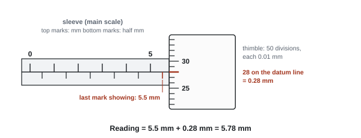
Reading vernier calipers
- Read the main scale at the vernier zero: here, just past 23 mm.
- Find the vernier line that lines up exactly with a main-scale line. That number is the tenths of a millimetre.
- Record to 1 decimal place in mm (resolution 0.1 mm). Digital calipers read to 0.01 mm.
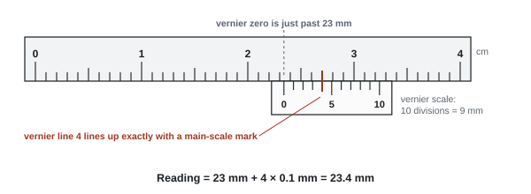
Other instruments
- Digital meters and balances: the last digit shown is the resolution. Give it with a unit ("1 g", or "0.001 kg").
- Oscilloscope: time = number of divisions × time-base setting (ms/div). The resolution is the smallest subdivision: 50 ms/div with 5 subdivisions gives 10 ms (Jan 2026).
- Analogue meters and scales: read with your eye level with the pointer, at right angles to the scale, to avoid parallax.
Techniques for one accurate measurement
These are the techniques mark schemes credit most. Learn them as "do this → because".
| Measurement | Technique | Why |
|---|---|---|
| Vertical length with a rule (spring extension, drop height) | clamp the rule; check it is vertical with a set square or plumb line; put it close to the object; zero level with the bottom of the object (or read both ends and subtract) | avoids measuring a slanted length |
| Reading the rule | eye level with the mark, or a set square against the rule to the object; a marker or pointer on the object | reduces parallax |
| Horizontal distance on a bench | clamp the rule; check it is horizontal (spirit level); zero at the start mark | |
| Long distance | tape measure kept straight and taut, trundle wheel along a straight line, or a laser rangefinder held level | |
| Diameter of a wire or sphere | micrometer or calipers; check and correct for zero error; use the ratchet on a micrometer; measure at several places and orientations and take a mean | zero error is systematic; the ratchet stops you over-tightening and squashing the object; the object may not be perfectly round |
| Very small thickness (paper, acetate) | measure a stack (e.g. 20 sheets) and divide | same absolute uncertainty, much smaller percentage |
| Time with a stopwatch | start it as the object is released; check it starts at zero; view the finish side-on or against a marker; repeat and take a mean | reduces reaction-time effects |
| Short times | light gates and an electronic timer or data logger; a video played back frame by frame; two microphones and an oscilloscope | removes human reaction time |
| Period of an oscillation | time many (10 or 20) oscillations and divide | percentage uncertainty from reaction time falls |
| Fringe or node spacing | measure across many gaps and divide by the number of gaps | |
| Frequency of the loudest sound (resonance) | sweep the frequency up and down slowly, note the frequency of maximum loudness from both directions, average; or use a microphone and oscilloscope for maximum amplitude | judging "loudest" by ear is random |
Say where on the object you measure: from the centre of each dark fringe, to the bottom of the mass, to the centre of the receiver. Examiners withhold marks when the position isn't stated.
Random and systematic errors
| Random error | Systematic error | |
|---|---|---|
| What it does | readings scatter unpredictably either side of the true value | every reading is shifted by the same amount (or the same fraction) in the same direction |
| Examples | reaction time, parallax, judging a maximum, small temperature changes | zero error of a meter, micrometer or balance; a ruler not vertical; extra length of leads; background light |
| How to reduce it | repeat and average; measure larger quantities; electronic timing | check and correct (re-zero); change the method or instrument; use a gradient |
| Repeats help? | yes | no |
- Spell it systematic. "System" or "systemic" is not accepted (Oct 2024).
- Don't write "human error": it is ignored. Name the actual error (reaction time, parallax).
- Reaction-time answers earn two ideas: there is a delay in starting/stopping the watch, and the delay varies each time.
Commenting on an inexperienced student's experiment
| Comment on | What to say |
|---|---|
| Number of readings | too few to see a trend or plot a reliable graph; take at least 6 values of the IV |
| Range | too narrow; extend it (or take extra readings closer together near a peak) |
| Significant figures | measured values must have the same decimal places (set by the instrument); calculated values should match the sig figs of the data |
| A reading that doesn't fit | name it ("20.5 cm") and say it should be checked or repeated; on a graph, circle it and leave it out of the line |
| Improvements | add apparatus that removes a named error: set square, plumb line, marker, sand tray, light gates, video camera, data logger |
Worked example: dividing by the gaps
A student marks 6 bright fringes on a screen. The distance from the first to the sixth is 41.5 cm. Find the fringe spacing.
6 fringes have 5 gaps between them.
spacing = 41.5 cm ÷ 5 = 8.30 cm
Dividing by 6 (the number of fringes) gives 6.92 cm, which is wrong (Jan 2023, Jan 2024).
Unit 6 (A2): resolution and the uncertainty in one reading
Resolution is the smallest change an instrument can show (the value of one scale division, or the last digit on a digital display). For a single reading, the uncertainty is half the resolution.
| Instrument | Resolution | Uncertainty in one reading | Good for |
|---|---|---|---|
| Metre rule / 30 cm rule | 1 mm | ±0.5 mm | lengths from about 10 cm up |
| Vernier calipers | 0.1 mm | ±0.05 mm | diameters and lengths up to about 15 cm; inside jaws for internal diameters |
| Digital calipers | 0.01 mm | ±0.005 mm | as vernier |
| Micrometer screw gauge | 0.01 mm | ±0.005 mm | wires, sheets, small spheres (range only about 0–25 mm) |
| Stopwatch | 0.01 s | ±0.005 s, but reaction time (about 0.1–0.2 s) is far bigger, so use half the range of repeats | times of several seconds |
| Thermometer (glass) | 1 °C | ±0.5 °C | temperatures; a probe and data logger may be finer |
| Top-pan balance | 0.1 g or 0.01 g | ±0.05 g or ±0.005 g | masses |
| Measuring cylinder (5 cm³ divisions) | 5 cm³ | ±2.5 cm³ | volumes of liquid; read the bottom of the meniscus |
| Digital meter | last digit, e.g. 0.01 V | ±0.005 V | p.d. and current |
- A length found from two rule readings (a height above the bench, a deflection) has an uncertainty of 0.5 + 0.5 = 1 mm: each reading carries half the resolution, and the uncertainties add when you subtract.
- Range matters too. A micrometer cannot measure a 5 cm lens; use vernier calipers (WPH16 Jun 2021).
Worked example: justify the choice of instrument
A wire has a diameter of about 0.38 mm. Show which instrument to use.
- Metre rule: 0.5 mm ÷ 0.38 mm × 100 = 130 %: useless.
- Vernier calipers: 0.05 mm ÷ 0.38 mm × 100 = 13 %.
- Micrometer: 0.005 mm ÷ 0.38 mm × 100 = 1.3 %: small, so use the micrometer.
The mark scheme always wants three things: the (half-)resolution, a % uncertainty calculated from it, and a comment comparing it ("1.3 % is small").
Unit 6 (A2): calibration and zero error
- Before measuring, check the instrument reads zero when it should: close the micrometer jaws; check a meter reads zero with no current; tare the balance.
- A non-zero reading is a zero error. It shifts every reading by the same amount, so it is a systematic error. Correct it by subtracting it from every reading. Repeats do not remove it.
- A thermometer can be checked against fixed points (melting ice at 0 °C, boiling water near 100 °C); a thermistor or sensor can be calibrated against a thermometer (CP12).
Unit 6 (A2): techniques that earn marks
| Measurement | Technique | Why it helps |
|---|---|---|
| Diameter or thickness (micrometer, calipers) | Check and correct for zero error | removes a systematic error |
| Measure at several places and orientations; take the mean | reduces random error; the object may not be uniform | |
| Use the ratchet; don't squash soft objects (rubber, string) | consistent force on the object | |
| Diameter of a cylinder with a rule | Two set squares touching opposite sides of the cylinder, with their edges on the rule; read the gap | the rule can't reach the true edges otherwise |
| Length or height with a rule | Rule vertical (set square or plumb line) and clamped; rule close to the object | avoids tilt and parallax |
| Read with your eye level with the mark, perpendicular to the scale | avoids parallax | |
| Use the same reference point every time; take two readings and subtract for a change | consistent measurement | |
| Checking a track or rule is horizontal | Spirit level, or measure its height above the bench at two places | a set square on the bench doesn't show tilt |
| Time for an event | Stopwatch next to the apparatus; start as the object is released; time a longer interval | reduces the % effect of reaction time |
| Temperature | Stir; thermometer close to the sample (not touching the heater or beaker); wait for the reading to steady; heat slowly | the thermometer lags behind the sample |
| Radioactive count | Subtract background; count for a long time or repeat and average; line up source and detector | background is a systematic error; decay is random |
| Volume of liquid | Read the bottom of the meniscus at eye level | avoids parallax |
"Repeat and take a mean" is not accepted for a single fixed measurement, like the deflection of one loaded beam: there is nothing new to average. Give techniques instead (set square, rule close, read perpendicular, subtract two readings).
Unit 6 (A2): timing oscillations
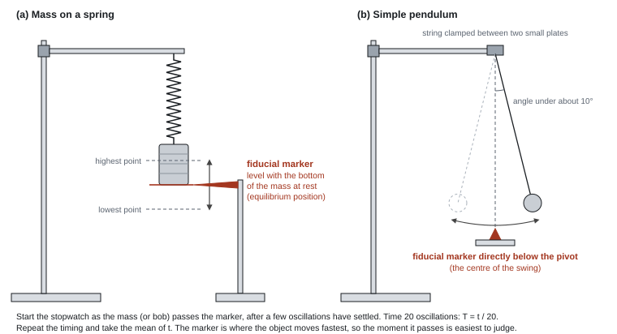
Use these in any oscillation question (CP16 and many unfamiliar contexts):
- Fiducial marker at the equilibrium position (the centre of the oscillation). The object moves fastest there, so the instant it passes is easiest to judge. Do not fix the marker to the pendulum or put it at the end of the swing.
- Time many oscillations (10 or 20) and divide by the number. The reaction-time error happens once, at the start and the stop, so its share of each period is much smaller.
- Let the oscillation settle, then count down "3, 2, 1, 0" and start on zero, so you don't miscount.
- Small amplitude (pendulum angle under about 10°): T = 2π√(l/g) only holds for small angles. For a spring, check the motion is vertical with no sideways swing.
- Repeat the timing and take the mean; for a rotating system, put the marker at the centre of the rotation.
- Divide both the mean and its uncertainty by N. If you timed 10 oscillations, the question still wants T, not 10T.
Worked example: mean, uncertainty and T
Four timings of 10 oscillations: 12.43 s, 12.51 s, 12.38 s, 12.47 s.
- Mean = (12.43 + 12.51 + 12.38 + 12.47) ÷ 4 = 12.4475 s → 12.45 s (same 2 d.p. as the data).
- Uncertainty = half the range = (12.51 − 12.38) ÷ 2 = 0.065 s.
- % uncertainty = 0.065 ÷ 12.45 × 100 = 0.52 %.
- Period T = 12.45 ÷ 10 = 1.245 s, with uncertainty 0.0065 s. The % uncertainty is unchanged (0.52 %).
Unit 6 (A2): data loggers, light gates, motion sensors and video
The question "How would a data logger (or video camera) improve this?" is in nearly every paper. Credited reasons:
- readings of two quantities taken at the same time (e.g. I and t during a capacitor discharge);
- many readings in a short time: a high sampling rate (say it as readings per second), so a better best-fit line;
- no reaction time; can run unattended for a long time;
- a temperature probe may have a finer resolution than a glass thermometer, with no parallax;
- slow-motion video with a timer (or frame count) in shot makes the end of a swing or the moment an object stops easier to judge; replay as often as needed.
Not credited: "more accurate" with no reason, "removes human error", "draws the graph for you".
Watch out: a light gate times when the edge of the bob cuts the beam, not its centre, which can add a systematic error (WPH16 Oct 2021). If a time is long anyway, a video only improves it a little.
Unit 6 (A2): safety, one specific hazard and its control
| Situation | Hazard → control that earns the mark |
|---|---|
| Hot water, hot plate, heated metal | burns / spills → heat-resistant gloves or tongs; switch off before moving; clamp leads so the beaker can't be pulled over |
| Radioactive source | ionising radiation → handle with long tongs; keep your distance; don't point it at anyone; minimum time out; return to the lead-lined box when not in use |
| Capacitors | an electrolytic capacitor can overheat or burst; a charged one can give a shock → don't exceed the working voltage; connect electrolytic capacitors the right way round; discharge before handling |
| Wire carrying a large current | wire gets hot → switch off between readings or add a series resistor |
| Masses on springs or wires | falling masses → clamp the stand to the bench; sand tray or foam below; eye protection if a wire may snap |
"Be careful", "wear a lab coat" and general PPE score nothing. One hazard plus its own control is what is asked.
Unit 6 (A2): recording data, "criticise the recording of this data"
The spec says you must comment on all of these. Credited criticisms:
- inconsistent significant figures or decimal places, or values not recorded to the resolution of the instrument (a metre rule reading written as 45 cm instead of 45.0 cm);
- missing or wrong units in a column heading (a current column headed A when the values are clearly mA);
- no repeat readings shown, or too few sets of readings (fewer than 5);
- the range is too small (all readings bunched together, so the trend or an extrapolation is unreliable);
- only the change recorded, not the initial and final readings;
- one value inconsistent with the rest (it doesn't fit the pattern or lies off the line): check it by repeating that reading.
Headings are quantity / unit, e.g. "T / s", "ln (V / mV)".
Unit 3 (WPH13)
- "Check (and correct) for zero error", then "to eliminate systematic error". The second mark only comes with the first.
- "Use a set square to check the rule is vertical"; "read at eye level / perpendicular to the scale to reduce parallax". "Straight", "horizontal" or "parallel" don't replace "vertical" (Oct 2024).
- "Use the ratchet" is for a micrometer only (not a vernier).
- Timing: "light gates (and data logger) remove reaction time"; a "camera" alone doesn't count: it must be a video viewed frame by frame or in slow motion.
- Terminal velocity test: "time over two (or more) equal distances; if the times are equal, it is at terminal velocity" (Oct 2024, Jun 2026).
Often asked as: state the resolution of a pictured instrument, write down a micrometer reading, describe how to measure one length accurately, describe a technique and link it to a type of error, give two sources of uncertainty and a technique for each.
Unit 6 (WPH16)
- "Resolution" for the smallest scale division. "Precision" in its place is not accepted.
- Instrument choice: half-resolution → % uncertainty → comparison ("0.35 % which is small").
- Two readings subtracted: "the uncertainty of a single reading is half the resolution; as the two readings are subtracted the uncertainties are added".
- Data logger: "readings taken simultaneously", "high sampling rate", "many readings in a short time".
- Safety: hazard and control, specific to the apparatus.
Often asked as: "Explain why vernier calipers/a micrometer is suitable" (2–3), "Describe how to measure… accurately" (2–3), "State one hazard and how to reduce it" (2), "Criticise the recording of the data" (2–3), "Explain how a video camera/data logger would improve the experiment" (2).
Unit 3 (WPH13)
Giving parallax or zero error with no link to the apparatus. A rule held against the object has little parallax; a ruler zero error is unlikely unless its end is worn.
Describing how to make an object reach terminal velocity (longer tube, thicker liquid) when the question asks how to check it has.
Saying "increase the frequency slowly" when the stem already says so. Add what you listen or look for.
Writing "repeat the measurement" for a different pair of fringes. Make clear you are measuring the same quantity again.
Unit 6 (WPH16)
Giving the reading, or the range of the scale, when asked for the resolution.
Reading "parallel" or "horizontal" to the scale: the word is perpendicular.
Suggesting a new instrument when the question asks for techniques.
Labelling a mean "accurate" because the readings agree: agreement shows precision (see P4).
Examined in past papers even though the spec doesn't list it.
Unit 3 (WPH13)
- Background light: measure the light-meter reading with the source off and subtract it from every reading (Jan 2024).
- Re-zeroing a strain-gauge bridge before loading removes the strain caused by the rule's own weight: a systematic error (Oct 2025).
- Checking a right angle without a protractor: measure the third side and compare with Pythagoras (Jun 2025).
- Light gates vs stopwatch: no reaction time, triggered automatically, smaller spread of times; but they take longer to set up, must be level and lined up, and trigger only once the object is already moving (Oct 2025).
Unit 6 (WPH16)
- Finding the point below the end of a ramp for a horizontal range: hang a plumb line; measure to the centre of the mark in the sand (WPH16 Jan 2026).
- Height of a cone: rest a set square on the tip and read a vertical rule, or use Pythagoras from the slant height and the radius (WPH16 Jan 2026).
- Fixed temperature intervals beat fixed time intervals when the stopwatch has much finer resolution than the thermometer: the % uncertainty in each temperature reading is smaller (WPH16 Jun 2022).
SpecP3Analysing data: tables, graphs and calculations
Process results from a more experienced student: calculate with correct significant figures and units, plot a graph (often a log graph) with a sensible scale, describe the relationship or trend, and use the graph (gradient from a large triangle, or intercept) to find a constant.
Results tables
- Each column heading is quantity / unit, e.g. t / s, V / V, (1/t²) / s⁻². No units in the body of the table.
- Measured values in a column all have the same number of decimal places, set by the instrument's resolution (0.01 mm on a micrometer, so 0.27 mm, 0.30 mm, not 0.3 mm).
- Calculated values have the same number of significant figures as the measured data they come from (or one more).
- The mean has the same decimal places as the readings. Use all the readings unless one is clearly anomalous and you say why.
Criticise the recording of results
A common 2–3 mark question. Pick from this bank, and make each point about the actual table:
- values not recorded to a consistent number of decimal places (measured) or significant figures (calculated);
- too few readings to plot a reliable graph, or the range is too small;
- no repeat readings (only if no repeats are shown anywhere in the question);
- a named value doesn't follow the trend ("the reading of 0.74 V");
- units missing from a heading.
Not credited: "intervals aren't regular", "no units" when the units are in the heading, or just "inconsistent".
Plotting a graph (5 marks)
- Axes the right way round: the quantity named first in "plot A against B" goes on the y-axis. Label each axis quantity / unit.
- Scale: each 2 cm square stands for 1, 2 or 5 (× a power of ten). Never 3, 4, 7 or 0.25. The points must cover more than half the grid in each direction. The axes don't need to start at zero unless you need the intercept.
- Plot accurately (2 marks): each point within half a small square; small neat crosses (× or +), not dots or blobs.
- Line of best fit: one thin continuous line (ruler for a straight line, smooth curve otherwise), with points balanced either side. Circle any anomalous point and leave it out of the line.
Describing the relationship
| What the graph shows | Relationship |
|---|---|
| Straight line through the origin | y is directly proportional to x |
| Straight line not through the origin | y is a linear function of x (not proportional) |
| Curve that falls more and more slowly | could be inverse: test by plotting y against 1/x |
| Straight line through the origin when y is plotted against 1/x | y is inversely proportional to x |
Rearranging into y = mx + c
WPH13 always gives you the equation. Your job is to make it match the straight-line equation and say what the gradient and intercept are.
- Rearrange so the plotted y-quantity is alone on the left.
- Write it next to y = mx + c and match: y, x, then gradient m, then intercept c.
- Check that everything in m is a constant during the experiment.
- State how you get the unknown from the gradient (or intercept).
Worked example: rearranging to y = mx + c (WPH13 Oct 2025)
A cylinder rolls a distance s = 0.900 m down a ramp raised by height h. The relationship is
1/t² = (g / 3s²) h − R, where R is a constant.
Explain how a graph of 1/t² against h can be used to find g.
Compare with y = mx + c: y = 1/t², x = h, gradient m = g / 3s², intercept c = −R.
s is fixed, so the gradient is constant and the graph is a straight line.
So g = 3s² × gradient.
(2 marks: the comparison with the gradient identified, then the expression for g.)
Common forms you will meet:
| Given equation | Plot | Gradient | Intercept |
|---|---|---|---|
| V = E − Ir | V against I | −r | E |
| R = (ρ/A) l | R against l | ρ/A | 0 (or contact resistance) |
| v² = u² + 2as | v² against s | 2a | u² |
| s = ½gt² | s against t² | g/2 | 0 |
| nλ = d sin θ | sin θ against n | λ/d | 0 |
| f = (1/2l) √(T/μ) | f against 1/l | ½√(T/μ) | 0 |
| Emax = hc/λ − φ | Emax against 1/λ | hc | −φ |
For "explain why the graph should be a straight line", you need three things: the rearranged equation, the comparison with y = mx + c, and a statement that the gradient is constant (name the quantities that are fixed). For "through the origin", also show that c = 0.
Gradient from a large triangle
- Draw a triangle on your line of best fit that covers at least half the length of the line.
- Take both corners from points on the line, not from the table (data points usually sit slightly off the line).
- Gradient = Δy ÷ Δx. Show both readings in each subtraction, mark the triangle on the graph.
- Give the gradient a unit (y-unit ÷ x-unit) and 2–3 significant figures.
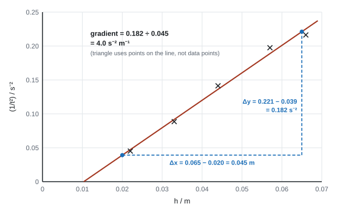
Worked example: gradient by large triangle, then use it
Data (Oct 2025): h / m = 0.066, 0.057, 0.044, 0.033, 0.022; t / s = 2.15, 2.25, 2.66, 3.36, 4.71.
Processed column (1/t²) / s⁻²: 0.216, 0.198, 0.141, 0.089, 0.045 (3 d.p., consistent).
Triangle corners on the line: (0.020 m, 0.039 s⁻²) and (0.065 m, 0.221 s⁻²).
gradient = (0.221 − 0.039) ÷ (0.065 − 0.020) = 0.182 ÷ 0.045 = 4.0 s⁻² m⁻¹ (4.04 before rounding)
g = 3s² × gradient = 3 × (0.900 m)² × 4.04 s⁻² m⁻¹ = 9.8 m s⁻²
Check the unit: m² × s⁻² m⁻¹ = m s⁻². The mark scheme accepted values from 9.4 to 10.2 m s⁻², to 3 s.f. with the unit.
Intercepts
- Read the y-intercept where the line crosses x = 0. If the x-axis doesn't start at zero, the line crossing the left edge of the grid is not the intercept: extend the line or calculate c = y − mx from a point on the line.
- A non-zero intercept where theory says zero usually means a systematic error with a physical cause: the resistance of leads or contacts, an extra fixed length in the set-up, a zero error. A gradient method removes it.
Area under a graph
- Area under a force–extension graph = work done = energy stored. For a straight line, E = ½FΔx; for a curve, count squares and multiply by the energy one square represents.
- Energy per square = (force per square) × (extension per square), e.g. 0.5 N × 0.002 m = 0.001 J.
Unit 6 (A2): significant figures and means
- A calculated value gets the same number of s.f. as the least precise data used (2 or 3 s.f. is normal).
- A mean gets the same number of decimal places as the readings, with its unit.
- Don't throw out an "anomalous" value unless the question tells you to.
- In a "show that", give your answer to one more s.f. than the value printed.
Unit 6 (A2): the graph marks
The plotting question carries 5 or 6 marks, and the scheme is always the same:
- Processed column(s) correct and to a consistent number of d.p. (log values to 2 or 3 d.p.).
- Axes labelled with quantity and unit, the right way round: "plot y against x" means y up the side.
- Sensible scale: steps of 1, 2 or 5 (× 10ⁿ), points covering more than half of each axis, every major line numbered. Never 3, 4 or 7 per division. The axes don't have to start at zero.
- Points plotted accurately (within 1 mm) as small crosses, not blobs.
- Best-fit line: one thin, continuous, ruled line with points scattered evenly either side. Don't join the first and last points.
Unit 6 (A2): linearising, turning a curve into a straight line
Compare with y = mx + c: whatever is on the y-axis must equal (gradient × whatever is on the x-axis) + constant.
Power law: y = a xⁿ → plot log y against log x
Take logs (base 10) of both sides:
Log form of a power law
Compare with y = mx + c: plot log y (y-axis) against log x (x-axis). The gradient is n and the y-intercept is log a, so a = 10intercept. A log–log graph has no gradient unit. ln on both axes works the same way (then a = eintercept).
Take logs (base 10 or base e, as long as you are consistent) of both sides:
\[ \log y = \log(k x^n) \]Use \(\log(ab) = \log a + \log b\) and \(\log(x^n) = n\log x\):
\[ \log y = n\,\log x + \log k \]Compare with \(y = mx + c\): plotting \(\log y\) against \(\log x\) gives a straight line with
\[ \text{gradient} = n, \qquad \text{intercept} = \log k \]So a log–log graph tells you the power directly. For example, plotting \(\log T\) against \(\log l\) for a pendulum gives a gradient of 0.5.
Exponential: y = a ekx → plot ln y against x
Take natural logs:
Log form of an exponential
Plot ln y against x (x itself, not log x). The gradient is k (negative for decay, e.g. −λ, −µ, −1/RC) and the y-intercept is ln a, so a = eintercept. The gradient has the unit of 1/x (s⁻¹, mm⁻¹).
If you use log₁₀ for an exponential, it still gives a straight line but the gradient becomes k × log₁₀e = 0.434k. Use one base throughout a question.
Take natural logs (base e) of both sides:
\[ \ln y = \ln\!\left(A e^{-kx}\right) = \ln A + \ln\!\left(e^{-kx}\right) \]Since \(\ln(e^{z}) = z\):
\[ \ln y = -k\,x + \ln A \]Plot \(\ln y\) against \(x\) (only \(y\) is logged): a straight line with gradient \(-k\) and intercept \(\ln A\). This is how you get the time constant from capacitor discharge (CP11) and the decay constant in radioactivity.
How to tell which: only two forms come up. If the unknown is a power, use log–log. If the variable sits in the exponent (e…x), use ln y against x.
Unit 6 (A2): "explain why this graph is a straight line" (2 marks)
The scheme is fixed:
- Write the log form in the same order as y = mx + c (or y = c + mx).
- Compare it with y = mx + c and say "the gradient is n (or −λ), which is constant, so the graph is a straight line" (and say what the intercept is if it helps).
Example for I = I₀e−t/RC: "ln I = −(1/RC) t + ln I₀. Comparing with y = mx + c, the gradient is −1/RC, which is constant, so ln I against t is a straight line with y-intercept ln I₀."
Unit 6 (A2): processing data and labelling log axes
- Give log or ln values to 2 or 3 d.p., consistently; round, don't truncate. Keep at least 5 figures on the calculator while working.
- Take logs of the numbers in the units given: if I is in mA, use ln (I / mA). Don't convert to A first; it only makes mistakes.
- Axis label format: ln (I / mA), log (r / fm). The quantity and unit both go inside the bracket. For a ratio with no unit: log (M / M☉).
- A log of a number below 1 is negative: log 0.0160 = −1.796.
Logs have no units, so label the axis ln (V / V) or log (T / s): take the log of the number, not the unit. When reading a gradient on a log graph, use differences in the log values on the axes, not the original numbers.
Unit 6 (A2): gradient and intercept
- Gradient: draw a triangle covering more than half of the line, read both points from the line (not from the table, unless the point sits on the line), and show the working. Give it to 2–3 s.f. with its sign and unit.
- Intercept: read it at x = 0 only if the x-axis starts at 0. On log graphs it usually doesn't (log x might run from 1.2 to 1.7). Then use a point on the line: c = y − mx.
- Antilog in the right base: 10c for log, ec for ln.
- Finish by writing the relationship with your numbers, e.g. "f = 4.8 × 10³ L−2.0".
Worked example: power law (log–log)
The frequency f of a vibrating ruler is measured for different overhanging lengths L. Find n and k in f = kLⁿ.
| L / cm | 20 | 25 | 30 | 35 | 40 | 45 |
|---|---|---|---|---|---|---|
| f / Hz | 12.1 | 7.6 | 5.4 | 3.9 | 3.0 | 2.4 |
| log (L / cm) | 1.301 | 1.398 | 1.477 | 1.544 | 1.602 | 1.653 |
| log (f / Hz) | 1.083 | 0.881 | 0.732 | 0.591 | 0.477 | 0.380 |
- log f = n log L + log k, so plot log (f / Hz) against log (L / cm).
- Two points read from the best-fit line: (1.300, 1.082) and (1.650, 0.383).
- Gradient n = (0.383 − 1.082) ÷ (1.650 − 1.300) = −0.699 ÷ 0.350 = −2.0 (no unit).
- The x-axis doesn't reach 0, so use c = y − mx: log k = 1.082 − (−2.0 × 1.300) = 3.682.
- k = 103.682 = 4.8 × 10³ Hz cm². So f = 4.8 × 10³ L−2.0 (L in cm).
Worked example: exponential decay (ln graph)
A 470 µF capacitor discharges through a resistor R. The current I is read every 20 s (each reading ±1 µA). Find R.
| t / s | 0 | 20 | 40 | 60 | 80 | 100 | 120 |
|---|---|---|---|---|---|---|---|
| I / µA | 60 | 40 | 25 | 17 | 11 | 7 | 5 |
| ln (I / µA) | 4.094 | 3.689 | 3.219 | 2.833 | 2.398 | 1.946 | 1.609 |
- I = I₀e−t/RC, so ln I = −(1/RC) t + ln I₀: plot ln (I / µA) against t. (The graph is drawn in P4, with error bars.)
- Points from the best-fit line: (10 s, 3.877) and (110 s, 1.777).
- Gradient = (1.777 − 3.877) ÷ (110 − 10) = −2.100 ÷ 100 = −0.0210 s⁻¹.
- −1/RC = −0.0210 s⁻¹, so RC = 1 ÷ 0.0210 = 47.6 s.
- R = 47.6 s ÷ (470 × 10⁻⁶ F) = 1.0 × 10⁵ Ω.
- y-intercept (t = 0 is on the axis): ln I₀ = 4.09, so I₀ = e4.09 = 60 µA.
Unit 6 (A2): using the result
- Compare with a predicted value when asked: state the expected value (e.g. gradient −½), state yours, then conclude ("−0.53 is close to −0.50, so the data support f ∝ V−½"). Back it up with a % difference or with the uncertainty (P4).
- Describe a trend in words with the direction and the shape ("T increases with M, with decreasing gradient").
- Use the line: read off or extrapolate a value (pressure at a height below sea level; luminosity of a star of a given mass; how many glass slides cut the light to 75 %: round up to a whole slide).
- Check proportionality without a graph: work out the constant (e.g. T/√D) for each pair of values and compare. Three calculations, then a conclusion. A % difference isn't the right tool here because these aren't repeats.
Unit 3 (WPH13)
- Axes: "y as 1/t² / s⁻², x as h / m" (a slash, not brackets in the scheme); reversed axes lose the first mark only.
- Scales: "value of small square in 1, 2 or 5 only"; points "within 1 mm"; "best fit line".
- "Compares to y = mx + c where the gradient is g/3s²", then "so g = gradient × 3s²". The rearranged form must actually be written.
- Gradient: "uses large triangle"; values must come from the line, and a final value from a single pair of data points scores only if the line goes through the origin (Jan 2026).
- Final answer to 2 or 3 s.f. with a unit; bald answers often score 0.
Often asked as: complete the processed column, plot the graph (5 marks), explain why the graph is a straight line, determine the gradient and use it to find a constant (3–4 marks), explain what the intercept shows.
Unit 6 (WPH16)
- "log T = log k + n log I; comparing with y = c + mx, the gradient is n" (both statements needed; the second depends on the first).
- "Do not allow m for gradient or c for the y-intercept": write the words.
- "Values of ln V correct and consistent to 3 d.p., accept 2 d.p."
- Gradient: "large triangle", "values read from the line", "answer in range" (ranges are narrow, about ±5 %).
- Intercept: "use of y = mx + c with a point on the line", "use of 10ˣ (or eˣ)".
Often asked as: explain why the graph is linear (2), complete the table (1–2), plot (5–6), gradient (3), the constant from the intercept (3), use the relationship to predict a value (2–3), compare with a given gradient (2–5).
Unit 3 (WPH13)
Not rearranging. About a third of candidates scored 0 on an "explain how the graph gives..." question for this reason (Jan 2025).
Small triangles, or a triangle using the first and last table values when they aren't on the line.
Awkward scales (3s, 4s or 7s per square): you lose the scale mark and often the plotting marks too.
Forgetting to convert units before using the gradient (nm to m, mm to m): powers of ten were the commonest slip in Oct 2023.
Writing "dx/dy" or giving the gradient with no unit when it has one.
Unit 6 (WPH16)
Writing the log form in one order and comparing it with y = mx + c in a different order. Or writing "y = mx − c". If you write two versions, only the last is marked.
Antilogging with the wrong base: ec when the graph used log₁₀.
Dropping the minus sign on a decay gradient, or quoting λ as negative: the gradient is −λ, so λ itself is positive.
Axis labels "log r" or "log r / fm": write log (r / fm).
Switching from 3 d.p. to 2 d.p. partway down a log column; truncating instead of rounding.
Unit 6 (A2). Before plotting, look at the range of your processed values and pick the scale so the points fill more than half of each axis. A false origin (not starting at zero) is fine and usually needed for log graphs.
Examined in past papers even though the spec doesn't list it.
Unit 3 (WPH13)
- Negative gradients from a rearranged formula: R/L against L had gradient −k and intercept ρ/A (Jun 2024).
- Reading a maximum from a curve: the peak of a power against resistance graph gives the internal resistance (Jun 2025).
- Gradient from a non-standard equation: d = (l³/4wh³E)F, so gradient = l³/4wh³E and E follows (Oct 2022).
Unit 6 (WPH16)
- A gradient formula given in the stem replaces the simple one: for log₁₀ P against 1/T the gradient was −X/(2.30k), so X = −2.30 k × gradient (WPH16 Oct 2022).
- Two isotopes decaying together: only the late, straight part of the ln C against t graph belongs to the long-lived isotope, so take the gradient there (WPH16 Jan 2022).
- Why an extrapolated starting value may not match the true one: scatter, a systematic error, or a large starting amplitude where the small-angle formula fails (WPH16 Jan 2025).
SpecP4Evaluating: errors, uncertainty and improvements
Discuss uncertainties in words and in numbers: percentage uncertainty from half the resolution (one reading) or half the range (repeats). Suggest realistic changes that reduce errors or improve the experiment. In Unit 3 you are not expected to combine percentage uncertainties; in Unit 6 you also use precision, accuracy and sensitivity correctly and combine percentage uncertainties.
Uncertainty in one reading
- Uncertainty = half the resolution of the instrument. The full resolution is not accepted.
- Percentage uncertainty = (uncertainty ÷ reading) × 100%. Give it to 1 or 2 significant figures.
Percentage uncertainty
Worked example: percentage uncertainty from the resolution
A balance with a resolution of 1 g reads 135 g (Jun 2025). Find the percentage uncertainty.
uncertainty = ½ × 1 g = 0.5 g
% uncertainty = 0.5 g ÷ 135 g × 100 = 0.37% → 0.4%
A micrometer reading of 17.90 mm (resolution 0.01 mm): 0.005 ÷ 17.90 × 100 = 0.03% (Jun 2021).
Uncertainty in a mean of repeats
- Uncertainty = half the range = (largest − smallest) ÷ 2. The full range is not accepted.
- Percentage uncertainty = half range ÷ mean × 100%.
- Mark schemes also accept "the difference between the mean and the value furthest from it". For lopsided data the two give slightly different answers; half the range is the standard method.
- A systematic offset (e.g. a known zero error) is not added to the uncertainty: subtract it from each reading.
Worked example: percentage uncertainty from half the range
Five micrometer readings of a wire's diameter: 0.27, 0.28, 0.27, 0.29, 0.28 mm.
mean = (0.27 + 0.28 + 0.27 + 0.29 + 0.28) ÷ 5 = 1.39 ÷ 5 = 0.278 → 0.28 mm (same decimal places as the readings)
half range = (0.29 − 0.27) ÷ 2 = 0.01 mm
% uncertainty = 0.01 ÷ 0.28 × 100 = 3.6% → 4%
The diameter of a canister is measured three times with a ruler: 66 mm, 64 mm and 61 mm. Give the diameter with its uncertainty and its percentage uncertainty.
Show solution
Mean = (66 + 64 + 61)/3 = 63.7 mm. To the resolution of the ruler that's 64 mm.
\[ \text{uncertainty} = \tfrac{1}{2}(\text{range}) = \tfrac{1}{2}(66 - 61) = 2.5\ \text{mm} \] \[ \text{percentage uncertainty} = \frac{2.5}{64} \times 100\% = 3.9\% \approx 4\% \]So the diameter is 64 mm ± 2.5 mm (± 4%). The radius has the same percentage uncertainty, 4%, even though its absolute uncertainty is halved to 1.25 mm.
Making the percentage uncertainty smaller
- Measure a bigger quantity with the same instrument: the absolute uncertainty stays the same but it is a smaller fraction of the reading. Examples: a stack of 20 sheets; 20 oscillations; a larger screen distance so the fringes are further apart; a thinner beam that bends more (Jun 2021, Oct 2022, Oct 2025).
- Use an instrument with a smaller resolution (micrometer instead of calipers).
- Remove reaction time with electronic timing.
Which source is most significant?
Work out the percentage uncertainty of each measurement and compare the numbers. The largest one dominates, so improve that measurement first.
- Jun 2021: force 0.09 N read on a 0.01 N meter → about 11%; distance about 0.2%; time about 0.6%. Force is the most significant, and the conclusion needs the numbers.
- A stopwatch time of 0.8 s with a reaction time of 0.2 s is a 25% uncertainty: far bigger than anything else.
Is the result consistent with the accepted value?
This "deduce / determine whether / consistent with" question appears in nearly every paper (2–3 marks). Both methods below are always accepted. Use the percentage uncertainty on the student's value, never on the accepted value.
Method 1: limits. Work out the range student value × (1 ± % uncertainty). If the accepted value lies inside, the result is consistent. You only need the limit on the side facing the accepted value.
Method 2: percentage difference. Compare it with the percentage uncertainty. If %D < %U the result is consistent; if %D > %U it is not.
Percentage difference
Worked example: percentage difference comparison (Oct 2025)
A student's value of g is 9.56 m s⁻² with a percentage uncertainty of 4%. Deduce whether it is consistent with g = 9.81 m s⁻².
% difference = (9.81 − 9.56) ÷ 9.81 × 100 = 2.5%
2.5% is less than 4%, so the value is consistent with 9.81 m s⁻².
Or limits: upper limit = 9.56 × 1.04 = 9.94 m s⁻². 9.94 > 9.81, so 9.81 lies within the range: consistent.
Worked example: a result that is not consistent (Jun 2026)
A lemon cell's e.m.f. is 1.13 V ± 5%. A zinc electrode should give 1.04 V. Was the metal zinc?
% difference = (1.04 − 1.13) ÷ 1.04 × 100 = −8.7%, size 8.7%
8.7% > 5%, so the result is not consistent with zinc.
Limits: 1.13 × 0.95 = 1.07 V to 1.13 × 1.05 = 1.19 V. 1.04 V is outside, so not zinc.
Always end with a sentence that compares two numbers and concludes: "2.5% < 4%, so consistent". "Close to the true value" or "similar" scores nothing.
Unit 6 (A2): overlapping ranges and "cannot tell"
- Overlapping ranges (two measured values, no data-book value). Work out both ranges. If they overlap, the two could be the same; if not, they differ. E.g. 1.15 ± 4.3 % has upper limit 1.20; 1.52 ± 1.2 % has lower limit 1.50; 1.20 < 1.50, so they are different (WPH16 Oct 2023).
- Always: a number first, then a verdict tied to it. "Cannot tell" is a valid conclusion when two candidate materials both lie inside the range (WPH16 Oct 2021, steel types). "Is g accurate?" means "is 9.81 m s⁻² inside your range?"
Suggesting improvements
Pair each named source of error with a specific modification. The source must be the kind of error the question asks for: a random error in the random slot.
| Source | Type | Modification |
|---|---|---|
| Reaction time starting/stopping a stopwatch | random | light gates with a timer or data logger; video viewed frame by frame |
| Judging where a ball lands | random | sand tray or carbon paper; video |
| Judging the loudest sound | random | microphone and oscilloscope; sound-level meter |
| Parallax reading a scale | random | set square or marker; eye level |
| Zero error (micrometer, ohmmeter, balance) | systematic | check before measuring and correct, or re-zero |
| Leads or contact resistance | systematic | use the gradient of R against l, not one reading |
| Background light | systematic | darken the room; subtract the background reading |
| Ruler not vertical | systematic | set square or plumb line |
Accuracy, precision, repeatable, reproducible
| Term | Meaning |
|---|---|
| Accurate | close to the true value |
| Precise | repeated readings are close together (small spread) |
| Repeatable | the same person, method and equipment give the same results again |
| Reproducible | a different person, method or equipment gets the same results |
| Valid | the experiment measures what it claims to, with other variables controlled |
A second student repeating the experiment with the same equipment and method shows repeatability, not reproducibility (Jan 2022).
Unit 6 (A2): words to use exactly
| Term | Meaning |
|---|---|
| Accuracy | how close a result is to the true value |
| Precision | how closely repeat readings agree (small spread) |
| Resolution | the smallest change the instrument can show |
| Sensitivity | the change in output per unit change in input (e.g. mV per °C) |
| Random error | readings scatter unpredictably either side of the true value; reduced by repeating and averaging |
| Systematic error | every reading is off in the same direction by the same amount or proportion (zero error, background count, a thermometer that lags); not reduced by repeating; eliminated by correcting it |
Precise does not mean accurate: a zero error gives readings that agree closely but are all wrong. Two students with the same mean are equally accurate; the one with the smaller range is more precise (WPH16 Jan 2022).
Unit 6 (A2): combining uncertainties
In Unit 6 the same ideas extend to results calculated from several measurements.
- A bigger measurement with the same uncertainty has a smaller % uncertainty. That's why you time 20 oscillations, measure 10 coins stacked, fold a rubber band in four, or use a longer card on a glider: twice the length, half the % uncertainty.
| The result is… | Rule |
|---|---|
| a product or quotient (A × B, A ÷ B) | add the % uncertainties |
| a power, Aⁿ | n × %U(A): square → 2×, cube → 3×, fourth power → 4×, square root → ½× |
| a sum or difference (A + B, A − B) | add the absolute uncertainties (then convert to % if needed) |
| a constant (π, 4, g from the data book) | no uncertainty |
Add the absolute uncertainties.
\[ (102.8 \pm 0.3) - (101.4 \pm 0.1) = 1.4 \pm 0.4\ \text{mm} \]Add the percentage uncertainties.
\[ \%\,\rho = \%\,m + \%\,V \]Multiply the percentage uncertainty by the power.
\[ \%(d^2) = 2 \times \%\,d \]Subtracting two nearly equal measurements is dangerous: the absolute uncertainties still add, but the result is small, so its percentage uncertainty is huge. In the pipe example above, 0.4 mm on 1.4 mm is a 29% uncertainty from two readings that were each better than 0.3%.
Alternative route, credited in every scheme: work out the largest and smallest possible values of the result (put each uncertainty in the direction that makes the answer biggest, then smallest). Uncertainty = half the difference.
Worked example: from readings to a decision (the Q4 chain)
A metal cylinder has mass m = 52.6 g (balance resolution 0.1 g). Its length is L = 54.2 mm (vernier calipers, one reading). Its diameter, from a micrometer at four places, is 12.02, 12.05, 12.01, 12.04 mm. Is it brass (8.50 g cm⁻³) or copper (8.96 g cm⁻³)?
1. Mean and uncertainties
- D = (12.02 + 12.05 + 12.01 + 12.04) ÷ 4 = 12.03 mm; half-range = (12.05 − 12.01) ÷ 2 = 0.02 mm → %U = 0.02 ÷ 12.03 × 100 = 0.17 %.
- L: half-resolution 0.05 mm → %U = 0.05 ÷ 54.2 × 100 = 0.09 %.
- m: half-resolution 0.05 g → %U = 0.05 ÷ 52.6 × 100 = 0.10 %.
2. The result
- ρ = m ÷ V = 4m ÷ (πD²L) = (4 × 52.6 g) ÷ (π × 1.203² cm² × 5.42 cm) = 8.54 g cm⁻³.
3. Combined uncertainty (D is squared, so double its %U)
- %U(ρ) = 2 × 0.17 + 0.09 + 0.10 = 0.52 % (≈ 0.5 %).
4. Decide (any one method earns the marks)
- Limits: 8.54 × (1 − 0.0052) = 8.49 and 8.54 × (1 + 0.0052) = 8.58 g cm⁻³. Brass (8.50) lies inside the range, so it could be brass. Copper (8.96) is outside, so it is not copper.
- %D: |8.54 − 8.50| ÷ 8.50 × 100 = 0.45 %. This is less than %U (0.52 %), so the result is consistent with brass. For copper, %D = 4.7 %, far bigger than 0.52 %.
Unit 6 (A2): error bars and worst-fit lines
- An error bar shows the uncertainty of a plotted point: a vertical line from (value − uncertainty) to (value + uncertainty).
- On a log graph, plot the log of each end. The bars are not equal: a fixed ±1 µA is a small fraction of 60 µA but a big fraction of 5 µA, so the bars grow as the values fall.
- The best-fit line goes through (or close to) all the bars with an even scatter.
- The worst-fit line is the steepest (or shallowest) line that still passes through every error bar.
- % uncertainty in the gradient = |best gradient − worst gradient| ÷ best gradient × 100. The same idea gives the uncertainty in the intercept.
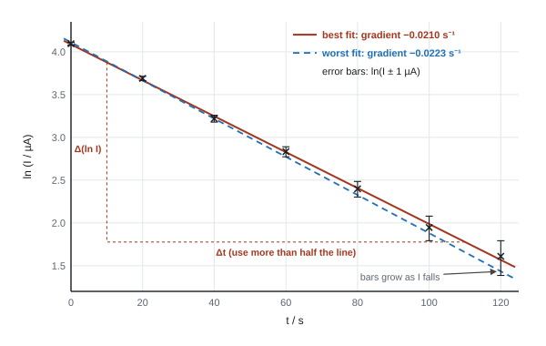
Worked example: uncertainty from the worst-fit line
From the graph: best gradient = −0.0210 s⁻¹; worst gradient = −0.0223 s⁻¹.
- % uncertainty in gradient = (0.0223 − 0.0210) ÷ 0.0210 × 100 = 6 %.
- RC = 1 ÷ 0.0210 = 47.6 s, so R = 1.0 × 10⁵ Ω ± 6 % (if C is exact).
- If the capacitor's tolerance is ±10 %, add it: %U(R) = 6 + 10 = 16 %.
Unit 6 (A2): sources of error and improvements
Say what the error is, how it affects the final answer (too big or too small), and what to change.
| Source of error | Effect | Improvement |
|---|---|---|
| Energy lost to the surroundings while heating | less energy reaches the sample, so a calculated L or c comes out too big | insulate and lid the container; use a higher power for a shorter time; stir |
| Reaction time when starting/stopping a stopwatch | random error in each time | time a longer interval (more oscillations, longer ramp, gentler slope); light gates or video |
| Background radiation | adds a constant count: systematic | measure it over a long time and subtract it from every reading |
| Zero error | every reading shifted: systematic | check before starting; subtract it |
| Parallax | readings too high or low | eye level, perpendicular, rule close to the object |
| Too few readings / range too small | unreliable line, gradient or extrapolation | at least 5–6 readings over a wider range; more readings where the curve changes fastest |
| Thermometer lag | temperature reading behind the true value | heat slowly; stir; wait for steady readings; use a probe and data logger |
Unit 3 (WPH13): combining percentage uncertainties, error bars, worst-fit lines and log graphs are Unit 6 skills. WPH13 doesn't ask for them. In Unit 3 you compare single percentage uncertainties, or apply one given percentage uncertainty to one result.
Unit 3 (WPH13)
- Single reading: "half resolution ÷ reading × 100", e.g. "0.005 mm / 17.90 mm × 100 = 0.028%". Final answer to 1 or 2 s.f.
- Repeats: "half range ÷ mean × 100"; "accept either half range or furthest from the mean"; full range not credited.
- Consistency: "upper limit = 9.94 m s⁻²; 9.94 is greater than 9.81 so consistent" or "%D = 2.5%; 2.5% is less than 4% so consistent".
- "Limit of the accepted value used = 0" (Jan 2026). Apply the uncertainty to the calculated value.
- Bigger quantity: "absolute uncertainty is the same, so the percentage uncertainty is smaller".
Often asked as: calculate a percentage uncertainty (one reading or repeats), deduce whether a value is consistent with an accepted value, identify the most significant source of uncertainty, suggest a modification to reduce an error, explain why a larger distance reduces the percentage uncertainty.
Unit 6 (WPH16)
- "Uncertainty = half the range" / "half resolution"; "% uncertainties are added"; "the % uncertainty in d is multiplied by 4" (for d⁴).
- "Calculates upper (or lower) limit… and compares with the accepted value"; "%D < %U so consistent".
- "Accurate: close to the true value"; "precise: small range / readings close together".
- "Background count adds a constant, so it is a systematic error."
- "Repeat readings reduce random error"; a correction eliminates a systematic error.
Often asked as: "Show that the % uncertainty in X is about…" (2–3), "Determine the value of ρ and its % uncertainty" (4–5), "Deduce whether the material could be…" (2–4), "Explain whether the student's statement about accuracy/precision is correct" (2), "Explain one source of error and its effect on L" (3).
Unit 3 (WPH13)
Using the full resolution or the full range as the uncertainty.
Giving a percentage uncertainty to 3 or more significant figures.
Dividing by the accepted value's limits, or using your own graph value when the question gives the student's value.
Concluding "consistent" because the numbers are "close".
Treating a value that is "far from the others" as automatically anomalous. If the spread is about the size of the reaction time (≈ 0.2 s), keep all the values (Oct 2019).
Unit 6 (WPH16)
Adding an absolute uncertainty to a % uncertainty. Convert first.
Forgetting to multiply by the power: D² doubles the %U, d⁴ multiplies it by 4.
Using the measured value as the bottom of %D: the accepted value goes on the bottom.
A verdict with no number: "the value is accurate" scores nothing without a limit or a %D.
"More repeats eliminate errors." They reduce random error only.
"Sensitivity" used as a synonym for resolution. It is output change per input change.
Examined in past papers even though the spec doesn't list it.
Unit 3 (WPH13)
- Maximum and minimum values of a calculated result from an uncertain input: put the extreme input values into the formula (Jan 2020, angle limits giving the range of refractive index).
- Two values with uncertainties, same material? Work out both ranges and see if they overlap (Jun 2019).
- Comparing a model with data (Oct 2023): a mean of 9.71 compared with g = 9.81 needs a calculated percentage difference and a comparison with the uncertainty, not "similar".
Unit 6 (WPH16)
- Area of a washer or a nut, or a volume with a hole subtracted: work out the absolute uncertainty of each squared term first, then add them because the terms are subtracted (WPH16 Jun 2022, Jan 2023).
- Ten identical rings weighed together: the balance uncertainty is the same, so the % uncertainty per ring is ten times smaller (WPH16 Jan 2023).
- "Could the source of the difference be the uncertainty?": if %D is much bigger than %U, a systematic error is the likely cause (WPH16 Jun 2026).
SpecP5Command words, maths, oscilloscopes and exam conventions
Not a separate spec list, but the papers demand it: at least 20 of the 50 marks are Level 2 maths. Know what each command word wants, and the conventions for "show that", "deduce" and "consistent with" answers. In Unit 6 this also covers the physics-specific skills behind 6.5: reading an oscilloscope trace and choosing its settings, deriving units, and reusing Unit 4 and 5 formulae in a practical context.
Command words as they are marked
| Command word | What earns the marks |
|---|---|
| State / identify / give | one fact, no reasoning |
| Suggest | apply physics to an unfamiliar set-up; specific to the context |
| Describe | what you do, in order, with named apparatus and the readings taken |
| Explain | the reason: "action, then effect, with what stays constant" |
| Justify | reasons for a stated choice, usually with a number |
| Calculate | a numerical answer with working, unit and sensible sig figs |
| Determine | work out a value, often from a graph; show every step |
| Show that | every step, ending at the given value (see below) |
| Deduce | use the data given to reach a conclusion: calculate, compare, conclude |
| Criticise | weaknesses in the data or method (see P3) |
| Discuss | both sides with reasons, and a calculation if data are given |
| Assess / evaluate | weigh up with a numerical comparison and a stated conclusion |
| Comment on | an informed opinion linked to the data |
"Show that" conventions
- Show the formula, the substitution with units converted first, and the answer to at least one more significant figure than the value given (show that ≈ 8800 kg m⁻³: write 8790 kg m⁻³).
- Every unit conversion must be visible (mm → m, g → kg, cm² → m²).
- If a later part uses the "show that" value, use the given value, not your own.
"Deduce / determine whether / consistent with" conventions
- Calculate: the result, then either the limits or the percentage difference.
- Compare: two numbers in one sentence (9.94 > 9.81; 2.5% < 4%).
- Conclude: answer the question asked ("so the cube could be copper", "so not zinc").
A conclusion with no comparison loses the last mark.
"Explain how the graph can be used" conventions
- Write the equation rearranged into the plotted form.
- Say "compare with y = mx + c" and state what the gradient (or intercept) equals.
- Say how you get the unknown ("g = gradient × 3s²").
Maths you need
| Skill | What to know |
|---|---|
| Mean, range, half range | half range = (max − min) ÷ 2 |
| Percentage uncertainty and difference | formulas in P4; difference uses the accepted value as the denominator |
| Rearranging | any given formula, often with unfamiliar symbols |
| Areas and volumes | circle A = πd²/4 (from a diameter: halve it first); sphere V = 4/3 πr³; cylinder V = πr²l; triangular prism V = ½ × base × height × length |
| Trigonometry | sin, cos, tan; tan θ = opposite/adjacent for screen geometry; Pythagoras |
| Standard form and prefixes | see the table below |
| Graphs | gradient, intercept, area by counting squares, reading a maximum |
| Significant figures | answers to the sig figs of the least precise data (2 or 3); % uncertainty to 1 or 2 |
| Prefix | Factor | Conversion trap |
|---|---|---|
| milli (m) | 10⁻³ | 1 mm = 10⁻³ m; 1 g = 10⁻³ kg |
| centi (c) | 10⁻² | 1 cm² = 10⁻⁴ m² |
| micro (μ) | 10⁻⁶ | 1 μs = 10⁻⁶ s |
| nano (n) | 10⁻⁹ | 633 nm = 6.33 × 10⁻⁷ m |
| kilo (k) | 10³ | 2.0 kHz = 2000 Hz |
| mega, giga (M, G) | 10⁶, 10⁹ | 200 GPa = 2.00 × 10¹¹ Pa |
- The paper ends with the List of data, formulae and relationships (g, e, h, c, the Unit 1 and 2 equations). Use it, but the practical-specific relationship is always given in the question.
Unit 6 (A2): reading an oscilloscope trace
- The screen is a grid of divisions (usually 1 cm). The time-base sets the time per horizontal division (e.g. 2.0 ms div⁻¹). The Y-gain sets the p.d. per vertical division (e.g. 0.5 V div⁻¹).
- Period: count the divisions for several whole cycles (from one peak to a later peak, or between matching zero crossings), multiply by the time-base, then divide by the number of cycles. Then f = 1/T.
- Amplitude (peak p.d.): count the divisions from peak to trough, halve it, multiply by the Y-gain. Peak-to-trough is easier to read than centre-to-peak because you don't need to find the zero line.
- For a series of pulses, measure from the first to the last pulse and divide by the number of gaps.
Worked example: frequency and amplitude from a trace
Time-base 2.0 ms div⁻¹, Y-gain 0.5 V div⁻¹. Three complete cycles span 7.5 divisions; peak to trough is 5.6 divisions.
- T = (7.5 × 2.0 ms) ÷ 3 = 5.0 ms → f = 1 ÷ (5.0 × 10⁻³ s) = 200 Hz.
- Peak-to-trough p.d. = 5.6 × 0.5 V = 2.8 V → amplitude = 1.4 V.
Improve accuracy: adjust the time-base and Y-gain so the trace fills as much of the screen as possible while still showing whole cycles.
Worked example: choosing a time-base setting
A coil produces one pulse each time a magnet on a wheel passes it. The wheel turns 25 times per second. Which setting, 5 ms div⁻¹ or 10 ms div⁻¹, shows at least two pulses on a 10-division screen?
- Time between pulses = 1 ÷ 25 = 0.040 s = 40 ms. To be sure two pulses appear wherever the trace starts, the screen must span at least two gaps: 2 × 40 ms = 80 ms, so at least 80 ms ÷ 10 div = 8 ms div⁻¹.
- 5 ms div⁻¹ shows only 50 ms: not enough. Choose 10 ms div⁻¹ (100 ms across the screen).
Unit 6 (A2): "show that" questions
- Show every step, and give your final value to more significant figures than the printed one.
- Don't fudge a reading to hit the printed value. In WPH16 Jun 2026 Q1(b) ("show that the frequency is about 200 Hz"), the trace actually gives T ≈ 4.4 ms, so f ≈ 230 Hz (227 Hz). That is fine: 230 Hz rounds to 200 Hz to 1 s.f.
- A 3-mark show-that gives only 2 marks for working backwards from the answer.
- Rearranging a formula is not enough when the question asks you to show a relationship: there must be a physics step.
Unit 6 (A2): units
- Find the unit of a constant by substituting SI base units for every other quantity. E.g. viscosity η from a formula with force, area and velocity gradient: η = F ÷ (A × v/x) → N ÷ (m² × s⁻¹) = N s m⁻² (WPH16 Jun 2024).
- The unit of a gradient is (y unit) ÷ (x unit): T² against M → s² kg⁻¹; ln P against h → m⁻¹; log against log → none.
- k in T = 2π√(M/k) comes out in kg s⁻², which is the same as N m⁻¹.
- Temperatures in gas and radiation formulae must be in kelvin (θ + 273).
Unit 6 (A2): physics from Units 4 and 5 that practical questions reuse
| Topic | Formulae you'll need |
|---|---|
| Oscillations | T = 2π√(m/k), T = 2π√(l/g), ω = 2π/T = 2πf, v = rω |
| Capacitors | Q = CV, E = ½CV², τ = RC, I = I₀e−t/RC, t½ = RC ln 2 |
| Thermal | ΔE = mcΔθ, ΔE = LΔm, pV = NkT (T in K) |
| Nuclear | A = λN, N = N₀e−λt, t½ = ln 2/λ |
| Materials and density | ρ = m/V, V = πr²L (cylinder), V = 4/3 πr³ (sphere), E = stress/strain, ρ = RA/L |
Unit 3 (WPH13)
- "Bald answer scores 0" is common: always show the substitution.
- Unit on the final answer is part of the last mark when the answer is a measurement.
- Ecf (error carried forward) is given from an earlier wrong value, so set out each step separately.
Often asked as: every question. Read the command word before you write.
Unit 6 (WPH16)
- Oscilloscope: "determines number of divisions for at least 2 cycles", "× time-base", "use of f = 1/T".
- Amplitude: "counts divisions peak to trough and halves", "× V/div".
- Show-that: "answer to at least 3 s.f." (one more than given).
- Units: "substitutes units for every variable".
Often asked as: "Show that the frequency is about…" (3–4), "Determine the amplitude of the p.d." (2–3), "Explain which time-base setting…" (2–3), "Show that the unit of η is N s m⁻²" (2).
Unit 3 (WPH13)
Treating "deduce" as "state": a bare conclusion with no calculation scores nothing (Oct 2023).
Using the radius formula with the measured diameter (forgetting to halve it): the commonest error in sphere-volume and wire-area questions.
Running out of time: the last part of the final question is often left blank. Aim for about a minute per mark on the short questions so you have time for the graph.
Unit 6 (WPH16)
Finding the period when the question asks for the p.d. amplitude (examiners report this every time a trace appears).
Measuring one cycle only: always use several.
Using g = 10 N kg⁻¹: use 9.81 (9.8 accepted).
Celsius in pV = NkT, or 271 instead of 273.
The eight AS core practicals (CP1–CP3 from Unit 1, CP4–CP8 from Unit 2) are examined directly in WPH11 and WPH12. In WPH13 their skills come back in unfamiliar set-ups: a ramp instead of free fall, a rubber band instead of a wire, a lemon instead of a cell. Learn each practical well enough to transfer its techniques, and use the "Often asked as (WPH13)" line at the end of each mark-scheme box to see where it has turned up.
SpecCP1Determine the acceleration of a freely-falling object
Measure the acceleration of free fall, g, by timing an object falling through measured heights, and find g from a graph.
Principle
An object dropped from rest (u = 0) falls a height h in time t:
Free fall from rest
- From the data sheet: s = ut + ½at².
- Compare with y = mx + c: plot h against t². It is a straight line through the origin with gradient = g/2, so g = 2 × gradient.
- Light-gate version: a card of length L falls through a gate after falling h. Speed v = L ÷ (time the beam is blocked), and v² = 2gh, so a graph of v² against h has gradient 2g.
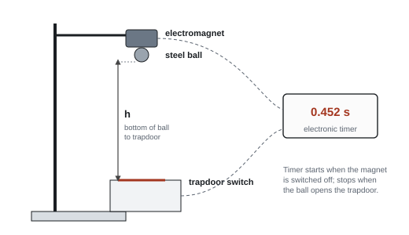
Core practical 1: method in brief
- Clamp the electromagnet above the trapdoor switch; connect both to the electronic timer.
- Hang the steel ball from the electromagnet. Measure h from the bottom of the ball to the trapdoor with a metre rule held vertical (check with a set square or plumb line).
- Switch off the magnet: the timer starts. The ball opens the trapdoor: the timer stops. Record t.
- Repeat 3 times at each height and take a mean.
- Use at least 6 heights over a wide range (e.g. 0.20 m to 1.20 m).
- Plot h against t² and find g = 2 × gradient.
Variables and safety
| IV | DV | Control |
|---|---|---|
| height h | time t | same ball (small and dense, so air resistance is negligible); same release method |
- Safety: clamp the stand to the bench (it is tall); catch the ball in a box or on a cushion so it doesn't roll onto the floor; keep feet clear.
Worked example: g from the gradient
A student's line of best fit for h against t² passes through (0.020 s², 0.098 m) and (0.220 s², 1.078 m).
gradient = (1.078 − 0.098) m ÷ (0.220 − 0.020) s² = 0.980 ÷ 0.200 = 4.90 m s⁻²
g = 2 × gradient = 2 × 4.90 = 9.80 m s⁻²
Percentage difference from 9.81 m s⁻² = (9.81 − 9.80) ÷ 9.81 × 100 = 0.1%.
Errors and improvements
| Source | Type | Improvement |
|---|---|---|
| Residual magnetism delays the release, so every t is too long | systematic | use the smallest current that holds the ball; a gradient method reduces the effect |
| h measured to the wrong point, or rule not vertical | systematic | measure from the bottom of the ball; set square or plumb line |
| Air resistance | systematic | small, dense steel ball; short drops |
| Reaction time (if a stopwatch is used) | random | electronic timer, light gates or video; this is why the trapdoor method is used |
| Short times give a large percentage uncertainty | random | larger heights; repeat and average |
- Light gate with card: "velocity = length of card ÷ time"; "measure the length of the card"; then v² = u² + 2as. Example (Jan 2022): a = 1.98² ÷ (2 × 1.50) = 1.31 m s⁻².
- Acceleration from two speeds and a time: a = (v − u)/t (Jan 2021); from distance and time from rest: s = ½at².
- Describe a method: "measure distance (metre rule)", "measure time (light gates / stop clock)", "show the equation used", "repeat and take a mean".
- Stopwatch timing on a ramp (Oct 2025): "start the stopwatch as soon as the cylinder is released", "repeat and calculate a mean", "view the motion from the side / add a marker / use a video".
Often asked as (WPH13): the context is always a ramp, air track or projectile, never the trapdoor itself. Air-track glider (Jan 2021), trolley with a light gate (Jan 2022), toy car on a ramp (Jan 2025), rolling cylinder with 1/t² against h (Oct 2025), projectile range (Oct 2019, Jun 2022).
Using the time down a whole ramp with v = u + at when only one light gate was used. One gate times the card, so it gives one speed only (Jan 2025).
Forgetting that the card's length is the length that actually blocks the beam.
Finding the launch angle for maximum range from a sin 2θ graph: that peaks at 45° by construction. Plot range against angle and take extra readings in small steps around the peak (Oct 2019).
Examined in past papers even though the spec doesn't list it.
- F = ma with a glider: to vary the force but keep the total mass constant, move masses from the glider to the hanging holder (Jan 2021). A graph of F against a is a straight line through the origin only if total mass is constant; a positive intercept suggests friction.
- Rolling down a ramp: the given relationship 1/t² = (g/3s²)h − R leads to g = 3s² × gradient (Oct 2025; worked in P3).
SpecCP2Use a falling-ball method to determine the viscosity of a liquid
Time a small sphere falling at terminal velocity through a liquid and use Stokes' law to find the liquid's viscosity.
Topic page: Density, upthrust and viscous drag
Principle
At terminal velocity the forces on the ball balance: weight = upthrust + viscous drag. Stokes' law (small sphere, low speed, laminar flow):
Stokes' law
Weight = (4/3)πr³ρsg; upthrust = (4/3)πr³ρlg. Putting these in and rearranging:
Viscosity from terminal velocity
Viscosity depends strongly on temperature, so measure and control it.
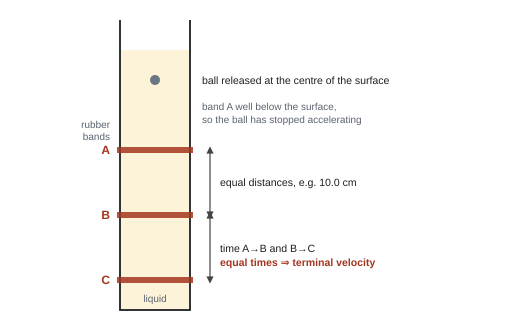
Core practical 2: method in brief
- Measure the diameter of each ball with a micrometer (zero error checked) at several orientations; take the mean and halve it for r.
- Find the ball's density: mass on a balance ÷ (4/3)πr³ (or use a value given). Find the liquid's density from the mass of a measured volume.
- Put rubber bands round a tall tube of the liquid: the first well below the surface, then two more at equal spacing (e.g. 10.0 cm).
- Drop the ball gently into the centre of the surface. Time it between the bands with a stopwatch, eye level with each band.
- Check terminal velocity: the times for the two equal sections must be equal. If not, move the bands lower.
- Repeat for each ball size (or several times with the same ball) and take means. Record the liquid's temperature.
- Retrieve balls with a magnet.
Variables and safety
| IV | DV | Control |
|---|---|---|
| radius of the ball (or temperature) | terminal velocity v (distance ÷ time between bands) | temperature of the liquid; same liquid; ball dropped at the centre |
- Safety: clamp the tall tube so it can't topple; wipe up spills (slippery floor); oil or glycerol in the eye: wear goggles.
Worked example: viscosity of an oil
Steel ball diameter 3.00 mm, so r = 1.50 × 10⁻³ m. ρs = 7800 kg m⁻³, ρl = 960 kg m⁻³.
Times over 0.200 m: 3.84 s, 3.95 s, 3.90 s. Mean = 3.90 s.
v = 0.200 m ÷ 3.90 s = 0.0513 m s⁻¹
η = 2 × (1.50 × 10⁻³)² × 9.81 × (7800 − 960) ÷ (9 × 0.0513)
η = 0.302 ÷ 0.462 = 0.65 Pa s
% uncertainty in the time = half range ÷ mean = (3.95 − 3.84)/2 ÷ 3.90 × 100 = 1.4%.
Errors and improvements
| Source | Type | Improvement |
|---|---|---|
| Ball not yet at terminal velocity at the first band | systematic | first band well below the surface; check with two equal sections |
| Reaction time and parallax when the ball passes a band | random | repeat and average; eye level with the band; longer distance between bands; video against a scale, or light gates |
| Wall effects (ball near the side slows down) | systematic | wide tube; drop the ball at the centre |
| Temperature changes the viscosity | systematic | thermometer in the liquid; water bath |
| Diameter is small, so its % uncertainty is large | random | micrometer, several orientations, mean |
For a graph method, rearrange to v = [2g(ρs − ρl)/9η] r². A graph of v against r² is a straight line through the origin with gradient 2g(ρs − ρl)/9η.
- "Measure the diameter with a micrometer / vernier at different orientations", "radius = diameter ÷ 2", "volume = 4/3 πr³", "density = mass ÷ volume" (Oct 2024, Jun 2019). Displacement methods for volume are not credited here.
- "Check for zero error" then "to eliminate systematic error" (the second mark depends on the first).
- Terminal velocity: "place markers / rubber bands at equal distances; time between two pairs; if the times (velocities) are the same, the ball is at terminal velocity" (Oct 2024).
- Force method (Jun 2021): reading when stationary = weight − upthrust; reading moving at constant speed = weight + drag − upthrust; the difference is the drag.
Often asked as (WPH13): steel ball in castor oil with ±6% limits compared with a given viscosity (Oct 2024); pulling a sphere through liquid with a force meter (Jun 2021); flow of oil through a funnel at different temperatures (Oct 2020); terminal velocity of a parachute (Jun 2026).
Using the diameter in the formula as if it were the radius. This was the commonest slip.
Describing how to make the ball reach terminal velocity sooner when asked how to check it has.
Writing about laminar flow or Stokes' law conditions in a method answer: no marks there.
Examined in past papers even though the spec doesn't list it.
- η from a measured drag force: η = F/(6πrv) = 0.09 N ÷ (6π × 8.95 × 10⁻³ m × 0.32 m s⁻¹) = 1.7 Pa s (Jun 2021).
- Most significant uncertainty: the force read to 0.01 N on 0.09 N is about 11%, much bigger than the distance (0.2%) or time (0.6%) (Jun 2021).
- Digital vs liquid-in-glass thermometer: better resolution and no parallax (Oct 2020).
SpecCP3Determine the Young modulus of a material
Load a long wire, measure its extension, original length and diameter, and find the Young modulus from a graph.
Topic page: Stretching materials
Principle
Young modulus
- Plot force against extension: gradient = F/Δx, so E = gradient × L ÷ A. Or plot stress against strain: gradient = E.
- Use only the straight-line (Hooke's law) part, below the limit of proportionality.
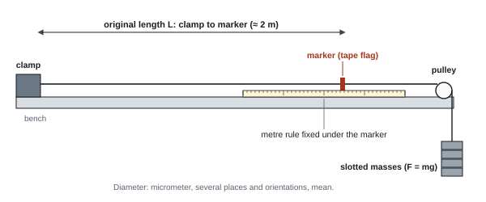
Core practical 3: method in brief
- Clamp one end of a long, thin wire to the bench; run it over a pulley at the other end. Hang a small mass to pull it straight and remove kinks.
- Measure the original length L from the clamp to a tape marker with a metre rule or tape.
- Measure the diameter with a micrometer (check zero error, use the ratchet) at several places along the wire and in two perpendicular directions; take the mean.
- Add masses in equal steps (e.g. 100 g). After each, read the marker position on a rule fixed under it, eye directly above the marker. Extension = new reading − starting reading.
- Unload in steps and read again to check the wire returned (it stayed elastic).
- Plot F against Δx, find the gradient of the straight part, and calculate E.
Variables and safety
| IV | DV | Control |
|---|---|---|
| force F (slotted masses, F = mg) | extension Δx | same wire (material, length, diameter); temperature |
- Safety: goggles in case the wire snaps; box of sand or cushion under the masses and feet kept clear; clamp the bench pulley and stand securely.
Worked example: Young modulus of a steel wire
L = 2.00 m; mean diameter d = 0.28 mm = 2.8 × 10⁻⁴ m.
A = πd²/4 = π × (2.8 × 10⁻⁴)² ÷ 4 = 6.16 × 10⁻⁸ m²
Gradient of F against Δx (large triangle on the straight part) = 6.2 × 10³ N m⁻¹
E = gradient × L ÷ A = 6.2 × 10³ × 2.00 ÷ 6.16 × 10⁻⁸ = 2.0 × 10¹¹ Pa
Compare: the diameter's % uncertainty (0.01 mm in 0.28 mm, about 4%, from P4) is far bigger than the length's (0.5 mm in 2.00 m, 0.03%). Improving the diameter measurement matters most.
Errors and improvements
| Source | Type | Improvement |
|---|---|---|
| Small extension, so large % uncertainty | random | long wire; read the marker against a fixed scale (or vernier scale) |
| Diameter is small and may vary along the wire | random | micrometer at several places and orientations; mean |
| Parallax reading the marker | random | eye vertically above the marker; set square |
| Wire kinked or slack at the start | systematic | starting load to straighten it before readings |
| Wire stretched beyond the limit of proportionality | — | use only the linear region; check it returns on unloading |
- Method (Oct 2021, Jan 2020): "wire clamped at one end", "slotted masses added at the other", "F = mg", "measure diameter at several places with a micrometer", "measure original length", "measure extension (marker and rule)", "plot stress against strain, E = gradient".
- Spring or band: "ruler vertical, checked with a set square", "read at eye level / perpendicular to the scale" (Jan 2023). A metre rule is fine for a 5.2 cm spring because 1 mm is small compared with the length (Jan 2023).
- Breaking stress: stress = F/A with A from the mean diameter; then a numerical comparison with the quoted value.
- Area under a force–extension graph = energy: ½FΔx for a straight line, count squares otherwise.
Often asked as (WPH13): the most recycled core practical. Nylon line breaking force (Oct 2021), bungee rope sample (Jan 2020), rubber band breaking force (Jun 2024), rubber band loading and unloading (Jan 2021), elastic cord (Jun 2023), spring (Jun 2019, Jan 2023), bending beam (Oct 2022), hair (Jan 2024), energy in a rubber band (Jun 2026), strain gauge (Oct 2025).
Describing a graph method when asked for a maximum (breaking) force, and never saying how the force is applied. That scored 0 (Oct 2021).
Using the radius formula with the diameter, or forgetting to convert mm to m (and mm² to m²).
Measuring the extension with the ruler re-positioned each time, so it isn't measured from a fixed reference.
Examined in past papers even though the spec doesn't list it.
- Hysteresis: for a rubber band, the area between the loading and unloading curves is the energy transferred to internal energy (heating) in one cycle (Jan 2021).
- Water absorption by nylon (Oct 2021): calculate the breaking stress before and after soaking, find the percentage change, and compare it with the 10% claim. Both stresses and a numerical conclusion are needed.
- Safe to test? A 1 mm sample breaks at a far smaller force than the full rope, so hanging masses are safe (Jan 2020): 1.9 kg × 9.81 ÷ π(0.475 × 10⁻³ m)² ≈ 2.6 × 10⁷ Pa.
- Bending beam: d = (l³/4wh³E)F, so gradient of d against F gives E; a thinner beam bends more, so d has a smaller % uncertainty (Oct 2022).
SpecCP4Determine the speed of sound in air using a 2-beam oscilloscope, signal generator, speaker and microphone
Use a signal generator, loudspeaker, microphone and two-beam oscilloscope to measure the wavelength (or a travel time) of sound and calculate its speed.
Principle
The wave equation
- Phase method: channel 1 shows the generator signal; channel 2 shows the microphone. Move the microphone away from the speaker: the microphone trace shifts. Each time the two traces come back in phase, the microphone has moved one wavelength.
- Timing method: a short pulse reaches two microphones a measured distance d apart. The oscilloscope shows the time t between the pulses: v = d/t.
- Time on an oscilloscope = number of divisions × time-base setting.
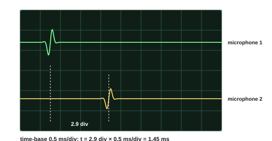
Core practical 4: method in brief
- Connect the signal generator to the loudspeaker and to channel 1 of the oscilloscope. Connect the microphone to channel 2.
- Set a frequency (e.g. 2.00 kHz). Put the microphone in front of the speaker, along a metre rule fixed to the bench.
- Move the microphone until the two traces are in phase (peaks line up). Record its position.
- Move it away, counting the number of times the traces come back into phase (e.g. 5). Record the new position.
- λ = distance moved ÷ number of wavelengths. v = fλ.
- Repeat at several frequencies. A graph of λ against 1/f is a straight line through the origin with gradient v.
Variables and safety
| IV | DV | Control |
|---|---|---|
| frequency f (or distance d) | wavelength λ (or time t) | air temperature; same speaker and microphone; microphone moved along a straight line |
- Safety: keep the volume low; loud sound over a long time can damage hearing.
Worked example: two ways to get v
Phase method: f = 2.00 kHz; the traces come back into phase 5 times as the microphone moves 0.86 m.
λ = 0.86 m ÷ 5 = 0.172 m
v = fλ = 2000 Hz × 0.172 m = 344 m s⁻¹
Timing method (figure): microphones 0.50 m apart; time-base 0.5 ms/div; pulses 2.9 divisions apart.
t = 2.9 × 0.5 ms = 1.45 ms = 1.45 × 10⁻³ s
v = d/t = 0.50 m ÷ 1.45 × 10⁻³ s = 345 m s⁻¹
Errors and improvements
| Source | Type | Improvement |
|---|---|---|
| Judging exactly when the traces are in phase | random | move through many wavelengths and divide; repeat and average |
| Reflections from walls and the bench | systematic | do it in a large open space; soft material around |
| Distance measured to the wrong point on the microphone | systematic | measure to the same point (the centre) each time |
| Temperature changes the speed | — | record the temperature |
| Reading the pulse position on the screen | random | choose a time-base that spreads the pulses over most of the screen |
- Oscilloscope: "time = number of divisions × time per division" is the first mark; then s = vt. Using v = fλ is not credited in a time-base question (Jan 2022, Jun 2024, Jan 2026).
- Pulse-echo: "distance travelled = 2 × length", so v = 2s/t (Jun 2024).
- Time-base choice: both pulses must fit on the screen, so pick a setting where 8–10 divisions cover the expected time (Jan 2022).
- Two loudspeakers from one generator are coherent; a minimum on the centre line means one speaker is wired in reverse, in antiphase (Jan 2023).
- Minima: waves arrive "in antiphase", "180°" or "π rad" out of phase. "Out of phase" alone isn't enough (Oct 2021).
Often asked as (WPH13): CRO and two microphones on a wooden bar (Jan 2022), ultrasound pulse-echo (Jun 2024), echo timing (Oct 2019, Jan 2026), resonance tube with λ = 4l (Jun 2021), closed tube f against n with gradient v/2L (Jun 2025), two loudspeakers w = λD/s (Jan 2023), microwaves reflected by a moving plate (Oct 2021), stopwatch over a long distance (Jun 2026).
Taking the distance a reflecting plate moves between maxima as λ. Moving the plate by d changes the path by 2d, so maxima are λ/2 apart (Oct 2021).
Measuring one spacing only instead of several (Jan 2023: only 20% averaged the gaps).
Dividing by the number of maxima instead of the number of gaps.
Examined in past papers even though the spec doesn't list it.
- Resonance with a signal generator (Jun 2025): f against n has gradient v/2L, so v = gradient × 2L = 291 × 2 × 0.595 = 346 m s⁻¹. Find the loudest point by sweeping the frequency up and down and averaging.
- A rubber hammer gives a wider pulse, so the time of the peak is harder to judge (Jan 2022).
- Laser rangefinder vs sound: light speed is constant and much larger, the beam is narrow, and pulses don't overlap (Jan 2026).
SpecCP5Investigate the effects of length, tension and mass per unit length on the frequency of a vibrating string or wire
Set up a standing wave on a stretched string and find how its frequency depends on the vibrating length, the tension and the mass per unit length.
Topic page: Superposition and stationary waves
Principle
The wave speed on a string is v = √(T/μ). For the first harmonic the vibrating length l is half a wavelength, so λ = 2l and f = v/λ:
First harmonic of a string
For the nth harmonic, λ = 2l/n, so f = (n/2l)√(T/μ).
| Vary | Keep constant | Plot (straight line through origin) | Gradient |
|---|---|---|---|
| length l | T, μ | f against 1/l | ½√(T/μ) |
| tension T | l, μ | f² against T | 1/(4l²μ) |
| mass per unit length μ | l, T | f against 1/√μ | √T / 2l |
Core practical 5: method in brief
- Fix one end of the string to a vibration generator (driven by a signal generator). Pass the other end over a pulley and hang slotted masses: T = mg.
- Measure the vibrating length l (generator to pulley, or between two bridges) with a metre rule.
- Increase the frequency slowly from low until a clear first harmonic (one loop, largest amplitude) forms. Read f from the generator.
- Approach from above as well and take the mean of the two frequencies.
- Change one variable (l, T or the string) and repeat, keeping the others constant.
- Find μ by weighing a measured length of the same string on a balance.
Variables and safety
- IV: l, T or μ (one at a time). DV: frequency of the first harmonic. Control: the other two.
- Safety: masses falling on feet (sand tray, feet clear); string snapping under tension (goggles).
Worked example: mass per unit length
l = 0.800 m; first harmonic at f = 50.0 Hz; hanging mass 0.200 kg.
T = mg = 0.200 × 9.81 = 1.96 N
v = fλ = f × 2l = 50.0 × 1.60 = 80.0 m s⁻¹
μ = T/v² = 1.96 ÷ 80.0² = 3.07 × 10⁻⁴ kg m⁻¹
Errors and improvements
| Source | Type | Improvement |
|---|---|---|
| Judging the frequency of maximum amplitude | random | approach from below and above; average; repeat |
| Locating the nodes | random | use a higher harmonic and measure across several loops, then divide by the number of half-wavelengths |
| The vibrating end is not a perfect node | systematic | measure l between nodes (or bridges), not to the generator |
| Pulley friction changes the tension | systematic | free-running pulley |
- Sources of uncertainty (Jun 2019): the length between nodes, and the frequency at which a clear standing wave forms.
- Techniques: "measure l across several loops / nodes and divide"; "adjust f slowly around the maximum amplitude; take the mean of readings approached from both sides".
- Rearranging f = (1/2l)√(mg/μ) to find μ (3 marks).
Often asked as (WPH13): only once in 21 papers as a whole question (Jun 2019: find μ, two sources of uncertainty and a technique for each). Its resonance skills reappear in closed tubes (Jun 2021, Jun 2025).
Saying "the loudest sound" or "biggest amplitude" without how you find it reliably (sweep both ways and average).
Using λ = l instead of λ = 2l for the first harmonic.
SpecCP6Determine the wavelength of light from a laser or other light source using a diffraction grating
Shine a laser normally through a diffraction grating, measure the angles of the bright orders, and calculate the wavelength.
Topic page: Refraction, diffraction and polarisation
Principle
Diffraction grating
- On a flat screen at distance D, an order a distance x from the centre has tan θ = x/D. Grating angles are large, so don't use the small-angle approximation.
- Graph method: plot sin θ against n; gradient = λ/d.
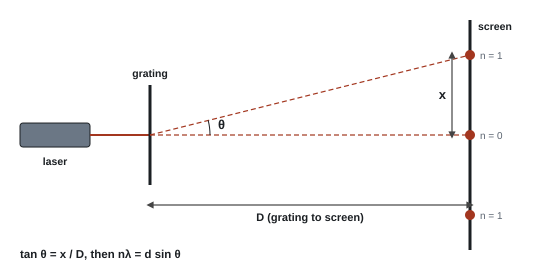
Core practical 6: method in brief
- Set up the laser, grating and a screen (or wall) about 1 m away. The grating must be perpendicular to the beam: the spots either side should be at equal distances.
- Measure D (grating to screen) with a metre rule or tape.
- Measure the distance between the two first-order spots, from centre to centre, and halve it to get x. Repeat for second order.
- θ = tan⁻¹(x/D); λ = d sin θ / n.
- Repeat with a different D or grating and take the mean λ.
Variables and safety
- IV: order n (or D). DV: position of the bright spot x. Control: same laser, same grating, grating perpendicular.
- Laser safety: never look into the beam or its reflections; remove reflective objects; wear light-absorbing (dark-lens) laser safety glasses if needed. Ordinary clear goggles don't help (Jan 2024).
Worked example: wavelength of a laser
Grating: 300 lines per mm, so d = 1 ÷ (300 × 10³ m⁻¹) = 3.33 × 10⁻⁶ m.
D = 1.000 m. The two first-order spots are 0.387 m apart, so x = 0.1935 m.
θ = tan⁻¹(0.1935 ÷ 1.000) = 10.95°
λ = d sin θ ÷ n = 3.33 × 10⁻⁶ × sin 10.95° ÷ 1 = 3.33 × 10⁻⁶ × 0.190 = 6.33 × 10⁻⁷ m (633 nm)
Errors and improvements
| Source | Type | Improvement |
|---|---|---|
| Spot centre hard to judge (spots are wide) | random | measure centre to centre across both sides and halve; darken the room |
| Grating not perpendicular to the beam | systematic | check the spots are symmetrical; set square |
| x small, so large % uncertainty | random | larger D; use higher orders |
| D measured to the wrong point | systematic | measure from the grating itself to the screen |
- Laser safety (Jan 2024): "do not look directly into the beam", "remove reflective objects", "light-absorbing / dark safety glasses".
- Fringe spacing (Jan 2024): "measure from the centre of each dark minimum", "measure across several fringes and divide by the number of gaps", "a larger screen distance makes the % uncertainty in w smaller".
- Electron diffraction rings (Jun 2019, Jun 2023): vernier calipers measure ring diameters with smaller resolution, and the jaws sit at the curved screen without parallax. A graph uses all the data and reduces random error.
Often asked as (WPH13): laser and a hair, diameter from the fringe spacing (Jan 2024), sound interference (Jan 2023), microwaves (Oct 2025), ultrasound standing wave acting as a grating with sin θ against f (Jan 2025), electron diffraction rings (Jun 2019, Jun 2023).
"Wear goggles" with no detail on a laser question.
Measuring to the edge of a spot or fringe instead of its centre.
Using the number of fringes instead of the number of gaps.
Examined in past papers even though the spec doesn't list it.
- Speed of ultrasound from a laser pattern (Jan 2025): f = (v/λlaser) sin θ, so v = gradient × λlaser; the liquid is identified by comparing with given speeds within the 5% uncertainty.
- Electron diffraction shows electrons behave as waves: a ring pattern is only possible by diffraction (Jun 2019).
SpecCP7Determine the electrical resistivity of a material
Measure the resistance of different lengths of a wire and its diameter, and use a graph to find the resistivity of the material.
Topic page: Current and resistance
Principle
Resistivity
- A graph of R against l is a straight line with gradient = ρ/A, so ρ = gradient × A.
- Any fixed extra resistance (leads, contacts) adds the same amount to every reading: it moves the intercept but not the gradient. That is why the graph method beats a single reading.
Core practical 7: method in brief
- Tape the wire, straight and without kinks, along a metre rule.
- Measure the diameter with a micrometer (zero error checked) at several places and orientations; take the mean; A = πd²/4.
- Connect one end with a crocodile clip at the zero of the rule; move a second clip (flying lead) along the wire.
- For each length l (e.g. every 10 cm from 0.10 m to 1.00 m), measure R with an ohmmeter, or measure V and I and use R = V/I.
- Keep the current small and switch off between readings so the wire doesn't heat up.
- Plot R against l; ρ = gradient × A.
Variables and safety
| IV | DV | Control |
|---|---|---|
| length l | resistance R | same wire (material, diameter); temperature (small current, switch off between readings) |
- Safety: a thin wire carrying a large current gets hot and can burn; keep the current low.
Worked example: resistivity of constantan
Mean diameter 0.32 mm, so A = π × (0.32 × 10⁻³ m)² ÷ 4 = 8.04 × 10⁻⁸ m².
Gradient of R against l from a large triangle = 6.1 Ω m⁻¹ (the line crosses the R-axis at 0.3 Ω: contact resistance).
ρ = gradient × A = 6.1 Ω m⁻¹ × 8.04 × 10⁻⁸ m² = 4.9 × 10⁻⁷ Ω m
Unit check: Ω m⁻¹ × m² = Ω m.
Errors and improvements
| Source | Type | Improvement |
|---|---|---|
| Zero error on the ohmmeter | systematic | touch the leads together first and subtract the reading |
| Contact resistance at the clips; resistance of the leads | systematic | use the gradient, not a single R/l |
| Wire heats up, so R rises | systematic | small current; switch off between readings |
| Diameter small and may vary | random | micrometer at several places; mean |
| Length measured to the wrong point | systematic | measure between the actual contact points of the clips |
- "Measure R with an ohmmeter", "measure the length between the electrodes", "vary length and plot R against l", "gradient = ρ/A" (Jan 2023, 4 marks).
- Systematic errors credited: "contact resistance at the electrodes", "zero error on the ohmmeter", "electrodes not parallel".
- Line not through the origin (Oct 2023): a fixed length of rod and the leads are in the circuit. "Zero error" alone isn't enough; link it to the ohmmeter.
- Micrometer for a wire (Jun 2024): "check zero error / use the ratchet"; a fixed resistor "limits the current".
Often asked as (WPH13): graphite pencil line on paper (Jan 2023), model railway rails (Oct 2023), wire loop with a movable contact and R/L against L (Jun 2024), silicon slice with R against 1/w (Jan 2022), salt solution 1/ρ against mass of salt (Oct 2022), copper wire resistance against temperature (Jan 2021).
Taking l as the length of the whole sample instead of the part between the contacts, or A as length × width (Jan 2023: under 3% scored full marks).
Wrong powers of ten converting mm to m, or mm² to m² (Oct 2023).
Describing a voltmeter–ammeter method when the question already names an ohmmeter.
Examined in past papers even though the spec doesn't list it.
- Resistance and temperature: R = R₀αT + R₀ gives R₀ from the intercept and α from gradient ÷ intercept (Jan 2021).
- Worn rail (Oct 2023): a smaller cross-sectional area means a larger R at the same position, so the calibration graph gives a larger distance.
- More ions, more charge carriers: resistivity of salt solution falls as salt is added (Oct 2022).
SpecCP8Determine the e.m.f. and internal resistance of an electrical cell
Measure the terminal p.d. of a cell for a range of currents and use a graph to find its e.m.f. and internal resistance.
Principle
Terminal p.d.
- The "lost volts" Ir are dissipated inside the cell.
- Compare with y = mx + c: plot V against I. Intercept = E, gradient = −r.
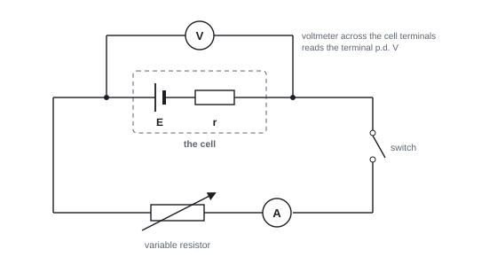
Core practical 8: method in brief
- Set up the circuit: cell, switch, ammeter and variable resistor in series; voltmeter across the cell terminals. (A small fixed resistor in series protects the cell if the variable resistor is turned to zero.)
- Start with the variable resistor at maximum resistance (minimum current).
- Close the switch, record I and V, then open the switch.
- Reduce the resistance in steps to get at least 6 pairs of readings across the widest range.
- Plot V against I. E = y-intercept; r = −gradient.
Variables and safety
| IV | DV | Control |
|---|---|---|
| current I (set by the variable resistor) | terminal p.d. V | same cell; cell temperature (switch off between readings) |
- Safety: don't short-circuit the cell (wires and cell get hot); the protective resistor limits the current.
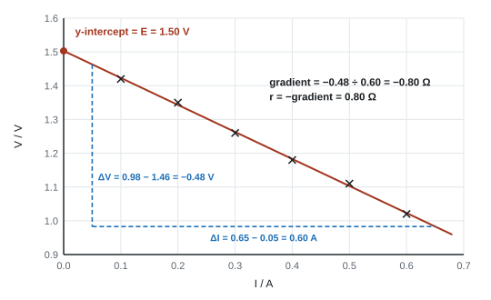
Worked example: E and r from the graph
Data: I / A = 0.10, 0.20, 0.30, 0.40, 0.50, 0.60; V / V = 1.42, 1.35, 1.26, 1.18, 1.11, 1.02.
Triangle on the line: (0.05 A, 1.46 V) to (0.65 A, 0.98 V).
gradient = (0.98 − 1.46) ÷ (0.65 − 0.05) = −0.48 ÷ 0.60 = −0.80 V A⁻¹
r = −gradient = 0.80 Ω
E = intercept on the V-axis = 1.50 V
Errors and improvements
| Source | Type | Improvement |
|---|---|---|
| Cell warms up or runs down, so E and r change | systematic | open the switch between readings; take readings quickly |
| Meter zero errors | systematic | check meters read zero before connecting |
| Too few points or narrow range | — | at least 6 readings over the full range of the variable resistor |
| Analogue meter parallax | random | digital meters, or eye level |
- Variable resistor at maximum: "to give minimum current", "protects the ammeter / prevents overheating" (Jun 2025, Jun 2026). "Less current" alone isn't enough.
- Repeats (Jun 2025): not needed with digital meters at a fixed resistance because "random error would be small / negligible"; they are worth it if the temperature varies or an analogue meter adds parallax.
- Circuit (Oct 2024): supply, variable resistor, protective resistor, ammeter in series, voltmeter across the box only.
- Graph: "V = E − Ir, so gradient = −r and intercept = E".
Often asked as (WPH13): variable resistor and power against resistance (Jun 2025), lemon cell with V against I (Jun 2026), sealed box circuit design (Oct 2024), solar cell I–V circuits and efficiency (Oct 2020, Jan 2025, Jun 2023), potential divider with a resistive rod (Oct 2019).
Voltmeter across the variable or fixed resistor instead of across the cell.
A thermistor or lamp symbol drawn for the variable resistor (Oct 2024).
Using P = V²/R with the wrong p.d. (the supply p.d. instead of the p.d. across that resistor).
Examined in past papers even though the spec doesn't list it.
- Maximum power transfer: the power delivered to the external resistor peaks when R = r, so the peak of a P against R graph gives the internal resistance. The p.d. there is V = √(PR) (Jun 2025).
- Choosing a protective resistor (Oct 2024): find the p.d. across it (6.0 − 0.7 = 5.3 V), the current, then P = VI or I²R, and pick a resistor whose power rating is larger.
- Solar cell efficiency = electrical power output ÷ (light intensity × area); output is greatest with the light hitting the panel perpendicularly (Jan 2025).
- Lemon cell (Jun 2026): 1.13 V ± 5% gives 1.07–1.19 V, which excludes zinc's 1.04 V (worked in P4).
Unit 6 assesses the eight A2 core practicals (CP9–CP16) from Units 4 and 5. They are rarely asked "as written". Instead, an unfamiliar experiment uses their techniques, and the examiner reports name the core practical behind it.
- Most used: CP16 (oscillation timing, resonance, damping) in almost every paper; CP11 (exponential decay, ln graphs, data loggers); CP15 (radioactive counting); CP12 (heating and temperature measurement).
- Seen directly once: CP9 (air track, WPH16 Oct 2020), CP13 (latent heat on a balance, WPH16 Jun 2021).
- Not yet examined directly: CP10 (collisions by video) and CP14 (Boyle's law). Learn the method from the spec anyway.
For each practical below: the idea, the method, variables, safety, how to process the results (worked example), errors and improvements, and how it turns up in the paper.
SpecCP9Force and change of momentum
Investigate how the force on an object is related to its change of momentum (Unit 4, core practical 9: impulse FΔt = Δp).
Topic page: Further mechanics, momentum
Aim and principle
Newton's second law in momentum form: the impulse on an object equals its change of momentum.
Impulse and change of momentum
If you plot Δp against FΔt you should get a straight line through the origin with gradient 1.
Core practical 9: method in brief
- Set up a trolley on a runway with a pulley at the end. A string runs from the trolley over the pulley to a hanging mass m. Two light gates are connected to a data logger.
- Compensate for friction: tilt the runway until the trolley, given a gentle push, passes both light gates in equal times (constant speed).
- Fix a card of measured length (vernier calipers) on the trolley so it cuts both light beams. The data logger gives the speed at each gate (card length ÷ time to pass) and the time Δt between the gates.
- Release the trolley from rest at the same point each time. Record u, v and Δt.
- Change the force by moving slotted masses from the trolley to the hanger, so the total mass being accelerated stays the same. Use at least 5 different forces and repeat each run.
- Calculate F = mg and Δp = (M + m)(v − u), where M is the trolley's mass, because the hanging mass accelerates too. Plot Δp against FΔt.
| Variable | What it is |
|---|---|
| Independent | the accelerating force F = mg (weight of the hanging mass) |
| Dependent | change of momentum Δp (from u, v and the total mass) |
| Control | total mass M + m; friction compensation; card length; release point |
Safety: put a box of sand or foam under the hanging mass; have a stop or a catcher at the end of the runway.
Worked example: does FΔt equal Δp?
Trolley 0.500 kg, hanging mass 0.050 kg, card 10.0 cm. Gate A: card passes in 0.200 s. Gate B: 0.100 s. Time between gates: 0.56 s.
- u = 0.100 m ÷ 0.200 s = 0.500 m s⁻¹; v = 0.100 m ÷ 0.100 s = 1.000 m s⁻¹.
- Δp = (0.500 + 0.050) kg × (1.000 − 0.500) m s⁻¹ = 0.275 kg m s⁻¹.
- FΔt = (0.050 × 9.81) N × 0.56 s = 0.27 N s.
- They agree to within 1 %, so the impulse equals the change of momentum.
Errors and improvements
- Friction not fully compensated → F is not the resultant force; Δp comes out smaller than FΔt. Re-check the slope with equal gate times.
- String not parallel to the runway → only part of the tension pulls along it.
- Card not measured precisely, or not perpendicular to the beam → wrong speeds. Measure with vernier calipers; a longer card doubles the time and halves its % uncertainty (the timer's resolution stays the same).
- Using only the trolley's mass in Δp ignores the falling mass, which is accelerated too.
How it is examined
WPH16 Oct 2020 Q1 used an air track with two identical gliders: A moves through gate 1, sticks to stationary B, and the pair passes gate 2.
- Is the track level? Leave a glider at rest and check it doesn't drift; or push it gently and check the times through the two gates are equal; or measure the track's height above the bench at two places. A set square on the bench is not credited.
- Is momentum conserved? m u = 2m v, so v = u/2 and the card takes twice as long through gate 2: t₂ = 2t₁. Test it with every pair of readings.
- A longer card: the time doubles, the timer's resolution is unchanged, so the % uncertainty halves.
Worked example: testing t₂ = 2t₁
Readings (t₁, t₂) in seconds: (0.25, 0.51), (0.31, 0.61), (0.42, 0.85).
- t₂/t₁ = 2.04, 1.97, 2.02. All three are close to 2, so momentum is conserved.
- Three calculations and a conclusion that refers to them earn the marks; a % difference is not the right tool because these are three different runs, not repeats.
- "Glider remains stationary / times at the two gates are the same" (level track).
- "If momentum is conserved, t₂ = 2t₁" + three calculations + conclusion.
- "Time doubles, resolution of timer is the same, so % uncertainty halves."
Often asked as: show the track is level (1), show momentum is conserved from data (3), effect of a longer card (2–3).
Saying "precision" when you mean resolution.
Proving t₂ = 2t₁ with algebra only and never using the data.
Forgetting that both trolley and hanging mass accelerate.
SpecCP10Collisions between small spheres, analysed with ICT
Use ICT (video and analysis software) to analyse collisions between small spheres, such as ball bearings on a table top (Unit 4, core practical 10).
Topic page: Further mechanics, momentum
Aim and principle
In any collision with no external force, momentum is conserved in every direction. Momentum is a vector, so in two dimensions check the x and y components separately. Kinetic energy is conserved only if the collision is elastic.
Momentum conserved in two dimensions
Core practical 10: method in brief
- Measure the mass of each sphere with a balance.
- Mount a video camera directly above a smooth, level table, looking straight down, so distances are not distorted. Put a metre rule in the frame, on the table, as a scale.
- Roll sphere A (e.g. from a short ramp, for a repeatable speed) into stationary sphere B. Record at a high frame rate.
- In video-analysis software, set the scale with the rule and the time from the frame rate. Mark the centre of each sphere frame by frame.
- Read off the velocity components before and after the collision. Repeat for different angles of impact.
| Variable | What it is |
|---|---|
| Independent | angle of impact (or masses of the spheres) |
| Dependent | velocities (speed and direction) after the collision |
| Control | release point on the ramp; same surface; camera height and angle |
Safety: low risk. Keep rolling spheres off the floor (slip hazard).
Worked example: momentum and kinetic energy from video data
Two 20 g spheres. Before: A moves 10.0 cm in 5 frames at 30 frames per second, so Δt = 5 ÷ 30 = 0.167 s and uA = 0.100 ÷ 0.167 = 0.60 m s⁻¹. B is at rest. After: A moves at 0.30 m s⁻¹ at 60° to its first direction; B moves at 0.52 m s⁻¹ at 30° on the other side.
- x-momentum after (per kg of mass, both masses equal): 0.30 cos 60° + 0.52 cos 30° = 0.15 + 0.45 = 0.60 m s⁻¹. Same as before ✓.
- y-momentum after: 0.30 sin 60° − 0.52 sin 30° = 0.26 − 0.26 = 0 ✓.
- KE before = ½ × 0.020 × 0.60² = 3.6 × 10⁻³ J. KE after = ½ × 0.020 × (0.30² + 0.52²) = 3.6 × 10⁻³ J. Kinetic energy is conserved, so the collision is (very nearly) elastic.
Errors and improvements
- Parallax/perspective: a camera at an angle distorts distances. Mount it vertically above, and put the scale rule at the same level as the spheres.
- Frame rate: too few frames gives coarse positions; use a higher frame rate (slow motion) and measure over several frames.
- Friction and spin: spheres slow down even before the collision; take velocities just before and just after impact.
- Damaged or uneven spheres, an uneven table, misjudging the centre of a blurred sphere: random errors. Repeat and average.
Not examined directly in WPH16 so far. Credit would go to the same ideas as other video questions: "frame rate gives the time between frames", "scale (metre rule) in the field of view", "camera perpendicular to the plane of motion", "slow motion lets the position be judged more precisely".
Often asked as (expected): explain how video improves the measurement (2), check momentum is conserved in two directions (3–4), decide whether a collision is elastic (2).
Adding speeds as if they were scalars in a 2D collision: resolve into components first.
Deciding "elastic" because momentum is conserved. Momentum is conserved in every collision; only kinetic energy tells you whether it was elastic.
SpecCP11Charging and discharging a capacitor
Use an oscilloscope or data logger to display and analyse the p.d. across a capacitor as it charges and discharges through a resistor (Unit 4, core practical 11).
Aim and principle
When a capacitor discharges through a resistor R, the p.d., current and charge all fall exponentially, with time constant τ = RC:
Exponential discharge
- After one time constant (t = RC), V has fallen to 37 % of V₀ (e⁻¹ = 0.37).
- The half-life t½ = RC ln 2 ≈ 0.69 RC.
- Taking logs: ln V = −(1/RC) t + ln V₀, so ln V against t is a straight line, gradient −1/RC.
- When charging, V = V₀(1 − e−t/RC): the p.d. rises quickly at first, then levels off at the supply p.d.
Core practical 11: method in brief
- Connect a d.c. supply (e.g. 6 V), a two-way switch, a capacitor (e.g. 470 µF) and a resistor (e.g. 100 kΩ) so the switch connects the capacitor either to the supply (charge) or across the resistor (discharge).
- Connect a voltage sensor and data logger (or an oscilloscope) across the capacitor.
- Move the switch to charge; wait until the p.d. stops rising. Start the logger, then switch to discharge. Record V against t for at least 3 time constants (here about 150 s).
- Repeat for charging, starting from a fully discharged capacitor.
- Without a logger: use a voltmeter (or ammeter) and stopwatch, reading every 10 s. Choose R and C so RC is long (about a minute) so readings can be taken by hand.
- Oscilloscope version: a square-wave signal generator charges and discharges the capacitor repeatedly, so the trace stays on the screen; read τ from it with the time-base.
| Variable | What it is |
|---|---|
| Independent | time t |
| Dependent | p.d. V (or current I) |
| Control | R, C, supply p.d. V₀ |
Safety: don't exceed the capacitor's working voltage; connect an electrolytic capacitor with the correct polarity; discharge it before handling.
Processing the results
Three routes, all credited:
- ln graph: plot ln V (or ln I) against t; gradient = −1/RC (see the worked example and graph in P3 and P4).
- 37 % point: read the time for V to fall to 0.37 V₀; that time is RC.
- Half-life: read the time for V to halve (repeat from different starting points and average); RC = t½ ÷ ln 2.
Worked example: R from a discharge curve
C = 470 µF, V₀ = 6.0 V. The data logger shows V = 2.2 V at t = 47 s and V = 3.0 V at t = 33 s.
- 2.2 ÷ 6.0 = 0.37, so 47 s is one time constant: RC = 47 s.
- Check with the half-life: RC = 33 s ÷ 0.693 = 48 s. The two agree.
- R = RC ÷ C = 47 s ÷ (470 × 10⁻⁶ F) = 1.0 × 10⁵ Ω.
Errors and improvements
- Capacitor tolerance is often ±10 % or ±20 %: this can dominate the uncertainty in R or C.
- With a meter and stopwatch, it is hard to read V (or I) and t at the same instant. A data logger takes simultaneous readings at a high sampling rate.
- The voltmeter's own resistance gives a second discharge path; a data logger or oscilloscope has a very high input resistance.
- Leakage in an electrolytic capacitor makes the decay slightly faster.
How it is examined
- A 6-mark plan to find C with an ammeter and stopwatch (WPH16 Jan 2021): circuit, measure R, charge to the same p.d., start the stopwatch as the switch moves, readings at regular intervals over at least one time constant, then ln I against t (gradient −1/RC) or the half-life.
- "Explain why ln I against t is a straight line" and R from the gradient (WPH16 Oct 2025).
- Its maths (exponential decay, ln against t) is reused in any decay context: cooling, draining liquid, damped amplitude, light through glass slides.
- "ln I = ln I₀ − t/RC; compare with y = c + mx; gradient = −1/RC" (not "m = −1/RC").
- Data logger: "readings of I and t taken simultaneously", "high sampling rate".
- Safety: "do not exceed the working voltage", "correct polarity", "discharge before handling".
Often asked as: draw the circuit (2–3), safety (1–2), plan with a graph (6), explain the straight line (2), find R or C from the gradient (3), advantage of a data logger (2).
Losing the minus sign: the gradient is −1/RC, and RC itself is positive.
Converting mA to A before taking logs: keep the unit given in the table.
Trying to measure charge directly. Measure V or I and use Q = CV.
Examined in past papers even though the spec doesn't list it.
- Efficiency of a motor powered by a capacitor: energy stored E = ½CV², useful output mgh. E.g. a 0.10 F capacitor at 5.0 V stores ½ × 0.10 × 5.0² = 1.25 J; lifting 0.050 kg through 1.20 m needs 0.050 × 9.81 × 1.20 = 0.59 J, so efficiency = 0.59 ÷ 1.25 = 0.47 (WPH16 Jun 2024). Don't forget the ½ or the g.
- Charge sharing: a charged capacitor C₁ connected to an uncharged C₂ ends at V₂ = V₁C₁/(C₁ + C₂), so V₂ against V₁ is a straight line through the origin (WPH16 Jun 2025).
SpecCP12Calibrating a thermistor as a thermostat
Calibrate a thermistor in a potential divider circuit so that it can act as a thermostat (Unit 5, core practical 12).
Aim and principle
- An NTC thermistor's resistance falls as its temperature rises.
- In a potential divider with a variable resistor, the thermistor's share of the supply p.d. falls as it warms, so the p.d. across the variable resistor rises.
Potential divider output
- Calibrating means finding Vout at known temperatures so the circuit can be used as a thermometer, or so you can set it to trigger a switch (e.g. turn a heater off) at a chosen temperature: a thermostat.
Core practical 12: method in brief
- Connect the thermistor in series with a variable resistor across a fixed supply (e.g. 5.0 V). Connect a voltmeter (or voltage sensor) across the variable resistor.
- Put the thermistor and a thermometer side by side in a beaker of water, with the thermometer bulb level with the thermistor. Keep the connections out of the water.
- Start with ice and water (0 °C). Heat gently, stirring all the time.
- Every 5 °C or 10 °C, wait for the readings to steady, then record θ and Vout. Go up to about 90 °C. Repeat while the water cools and average.
- Plot Vout against θ: this is the calibration curve.
- To make a thermostat: adjust the variable resistor so Vout reaches the switching p.d. of the control circuit at the temperature you want.
| Variable | What it is |
|---|---|
| Independent | temperature θ |
| Dependent | output p.d. Vout (or the thermistor's resistance) |
| Control | supply p.d.; setting of the variable resistor; same thermistor |
Safety: hot water and hot plate or kettle: heat-resistant gloves or tongs, clamp the beaker, switch off before moving anything. Keep electrical connections dry.
Worked example: setting the thermostat
Supply 5.0 V. The thermistor is 2.0 kΩ at 40 °C and 5.0 kΩ at 20 °C. The heater switches off when Vout (across the variable resistor) reaches 2.5 V. Choose Rvar for a switch-off at 40 °C.
- At 40 °C you need Vout = 2.5 V, half the supply, so Rvar = Rth = 2.0 kΩ.
- Check at 20 °C: Vout = 5.0 × 2.0 ÷ (2.0 + 5.0) = 1.4 V, below 2.5 V, so the heater stays on while the room is cold. As the room warms, Rth falls and Vout rises to 2.5 V at 40 °C.
Errors and improvements
- Thermometer lag and uneven water temperature: stir, heat slowly, wait for steady readings, put the thermometer next to the thermistor.
- Self-heating: current warms the thermistor above the water temperature. Keep the current small (large series resistance; switch off between readings).
- Parallax on a glass thermometer: read perpendicular to the scale. A temperature probe with a data logger has a finer resolution and no parallax.
- Taking readings at fixed temperature intervals is better than fixed time intervals when the stopwatch's resolution is much finer than the thermometer's.
How it is examined
The thermistor itself hasn't appeared, but its heating and temperature-measuring techniques come up in nearly every series, and the examiners name CP12: water heated by a resistor (WPH16 Oct 2021), steam heating a liquid (Jun 2022), a flame heating a screw (Jan 2023), cooling water with θ = θ₀e−bt (Jan 2024), a diode's current against temperature (Oct 2024), air pressure against temperature (Jan 2025, Jun 2025).
- Temperature technique: "stir the water", "thermometer close to the sample", "read perpendicular to the scale", "heat slowly / wait for the temperature to stabilise".
- Hazard: "hot water/beaker causes burns → use tongs / heat-resistant gloves / switch off the hot plate".
- Cooling plan: "record the initial temperature and start the stopwatch together", "readings at regular time intervals", "plot ln θ against t and check it is a straight line".
Often asked as: control variables (2), hazard and control (2), criticise the recording of data (2–3), how to make the temperature reading more accurate (2), advantage of a temperature probe and data logger (2).
"Wear gloves" alone, or "tongs to move the hot plate". Name the hazard and a control that fits it.
Putting the thermometer inside a sealed flask, or touching the heater.
"Repeat and take a mean" offered as a heating technique: it isn't credited there.
SpecCP13Specific latent heat of a phase change
Determine the specific latent heat of a phase change, for example of fusion of ice or vaporisation of water (Unit 5, core practical 13).
Aim and principle
Energy supplied during a change of state changes the potential energy of the molecules, not the temperature. The specific latent heat L is the energy needed to change the state of 1 kg with no change in temperature:
Specific latent heat
With an electrical heater of power P = VI, ΔE = Pt, so the mass boiled off goes down at a steady rate P/L.
Core practical 13: method in brief (vaporisation)
- Put a beaker of water with a 12 V immersion heater on a top-pan balance. Connect the heater to a d.c. supply with an ammeter in series and a voltmeter in parallel (or a joulemeter).
- Switch on and wait until the water is boiling steadily.
- Then start the stopwatch and record the balance reading every 60 s for at least 5 minutes. Record V and I.
- Plot mass m against time t. The gradient is −P/L, so L = VI ÷ |gradient|.
(Fusion version: two funnels of crushed ice, one with a heater, one without as a control. The extra mass of water collected from the heated funnel is the ice melted by the heater's energy. L = E ÷ (mheated − mcontrol).)
| Variable | What it is |
|---|---|
| Independent | time t (or energy supplied E = VIt) |
| Dependent | mass of water m |
| Control | heater power (V and I); heater fully immersed; water already boiling |
Safety: steam and boiling water scald: keep hands and the balance away from the steam; switch on the heater only when it is under water; use a low-voltage heater and keep the leads clear of the hot beaker.
Worked example: L from a mass–time graph
V = 12.0 V, I = 3.50 A, so P = 42.0 W. Once boiling, the mass falls from 250.0 g to 244.9 g in 300 s.
- Gradient = −5.1 g ÷ 300 s = −0.0170 g s⁻¹ = −1.70 × 10⁻⁵ kg s⁻¹.
- L = P ÷ |gradient| = 42.0 ÷ (1.70 × 10⁻⁵) = 2.5 × 10⁶ J kg⁻¹.
- The data-book value is 2.26 × 10⁶ J kg⁻¹. Ours is about 9 % too high, as expected if energy is lost to the surroundings (see below).
Errors and improvements
- Energy lost to the surroundings: less energy goes into boiling water, so less mass is lost per joule supplied, and the calculated L is too large. Insulate the beaker; use a higher power so the losses are a smaller fraction.
- Starting before the water boils: some energy heats the water instead of boiling it.
- Steam condensing and dripping back; water splashing out (mass lost that wasn't boiled).
- Two-power method (removes the losses): do the run at two powers P₁ and P₂. If the loss rate h is the same, P₁ − P₂ = L(r₁ − r₂), where r is the rate of mass loss.
How it is examined
WPH16 Jun 2021 Q2: a plan to find L for water boiled on a balance (6 marks), then "explain how a significant source of error affects the value of L" (3 marks). Any of these graphs was accepted, if the gradient statement matched the axes: m against t (gradient P/L); m against VIt or E (gradient 1/L).
- "Wait until the water is boiling before starting the stopwatch."
- "Plot m against t; gradient = P/L" or "m against E; gradient = 1/L".
- Error: "energy lost to the surroundings" → "less energy transferred to the water" → "so L is too large".
Often asked as: plan with a graph (6), effect of a source of error on L (3), energy-balance calculation with mcΔθ and LΔm (2–4).
Naming heat loss without saying what it does to L. The third mark is for the direction: too large.
Writing L = gradient when the gradient is P/L: check which way up your graph is.
Mixing grams and kilograms: L in J kg⁻¹ needs Δm in kg.
Examined in past papers even though the spec doesn't list it.
Energy balance to find a flame temperature: a hot screw (mass m₁, specific heat c₁) dropped into water (m₂, c₂) gives m₁c₁(θflame − θfinal) = m₂c₂(θfinal − θstart) (WPH16 Jan 2023).
SpecCP14Pressure and volume of a gas at fixed temperature
Investigate how the pressure of a fixed mass of gas varies with its volume at constant temperature (Unit 5, core practical 14: Boyle's law).
Aim and principle
For a fixed mass of ideal gas at constant temperature, pV = constant (from pV = NkT with N and T fixed). So:
- p against 1/V is a straight line through the origin;
- log p against log V is a straight line with gradient −1. The spec uses this as its own example of a log–log graph.
Core practical 14: method in brief
Boyle's law apparatus (oil column):
- Air is trapped in a vertical glass tube above a column of oil. A foot pump pushes the oil up, squashing the air. A Bourdon gauge reads the pressure.
- Read the length of the air column on the scale (eye level with the oil surface). The tube has a uniform cross-section, so the volume is proportional to the length (or V = length × area).
- Increase the pressure in steps. After each step wait about a minute so the air returns to room temperature (compressing it warms it). Then read p and V.
- Take at least 6 readings, then repeat while releasing the pressure, and average.
Syringe version: seal a syringe, clamp it vertically and add masses to the plunger. p = patm + mg/A, where A = πd²/4 from the plunger's diameter (vernier calipers).
Then plot p against 1/V (or log p against log V).
| Variable | What it is |
|---|---|
| Independent | pressure p (or the load on the syringe) |
| Dependent | volume V |
| Control | temperature (change slowly, wait); mass of gas (no leaks) |
Safety: wear eye protection (glass tube under pressure); don't exceed the gauge's maximum pressure; clamp the syringe and stand so weights can't fall.
Worked example: log p against log V
| V / cm³ | 40 | 35 | 30 | 25 | 20 |
|---|---|---|---|---|---|
| p / kPa | 100 | 114 | 133 | 160 | 200 |
| log (V / cm³) | 1.602 | 1.544 | 1.477 | 1.398 | 1.301 |
| log (p / kPa) | 2.000 | 2.057 | 2.124 | 2.204 | 2.301 |
- Gradient = (2.301 − 2.000) ÷ (1.301 − 1.602) = 0.301 ÷ (−0.301) = −1.00.
- So p ∝ V−1: Boyle's law holds. (Quick check: pV = 4000, 3990, 3990, 4000, 4000 kPa cm³, constant to within 0.3 %.)
Errors and improvements
- Temperature rises when the gas is compressed quickly: change the pressure slowly and wait before reading.
- Parallax reading the oil level or the syringe scale: read at eye level, perpendicular to the scale.
- A gauge may read pressure above atmospheric. If so, add atmospheric pressure (about 101 kPa) before plotting, or the line won't pass through the origin.
- Syringe: friction between plunger and barrel; dead volume in the nozzle (gives an intercept on the V axis). Lubricate the plunger; add the nozzle volume.
How it is examined
Boyle's law itself hasn't been set yet. Gas questions so far have been about pressure and temperature:
- Estimating absolute zero by extrapolating p (or the length of an air column) against θ back to zero (WPH16 Jan 2022, Jun 2025). Three readings between 19 °C and 49 °C are too few, over too small a range, to extrapolate accurately to about −273 °C.
- The number of molecules in a flask from pV = NkT (WPH16 Jan 2025).
Worked example: N from pV = NkT
A flask of diameter 15 cm holds air at 101 kPa and 20 °C. Find the number of molecules.
- r = 0.075 m, V = 4/3 π r³ = 4/3 × π × 0.075³ = 1.77 × 10⁻³ m³.
- T = 20 + 273 = 293 K.
- N = pV ÷ kT = (1.01 × 10⁵ × 1.77 × 10⁻³) ÷ (1.38 × 10⁻²³ × 293) = 4.4 × 10²² molecules.
- "Wait for the gas to return to room temperature before taking the reading."
- "Plot p against 1/V and check it is a straight line through the origin" / "log p against log V; gradient −1".
- Absolute zero: "too few readings", "range too small", "so the extrapolation is inaccurate".
Often asked as: plan with a graph (6), why the temperature must be constant (1–2), extrapolate to absolute zero and criticise it (3), N from pV = NkT (3).
Using diameter as radius; cm³ not converted to m³; temperature in °C (or 271 instead of 273).
Assuming pressure is constant in a rigid flask: there it's the volume that is fixed.
SpecCP15Absorption of gamma radiation by lead
Investigate how the count rate of gamma radiation falls as the thickness of lead between source and detector increases (Unit 5, core practical 15).
Aim and principle
Gamma radiation is absorbed exponentially by lead:
Absorption of gamma radiation
Plot ln C against x: gradient −µ. The half-thickness (thickness that halves the count rate) is x½ = ln 2 ÷ µ.
Core practical 15: method in brief
- With no source nearby, measure the background count for 10 minutes; find the background count rate (per minute).
- Clamp the GM tube and the gamma source a fixed distance apart, lined up with each other (use a rule alongside).
- Measure the thickness of each lead sheet with a micrometer at several places; use the mean.
- Place lead between source and tube. Count for a fixed time (at least 1–2 minutes); repeat three times and take the mean.
- Add sheets to increase the thickness in steps, for at least 6 thicknesses.
- Subtract the background count rate from every reading. Plot ln (corrected count rate) against x.
| Variable | What it is |
|---|---|
| Independent | thickness of lead x |
| Dependent | count rate C (corrected for background) |
| Control | source-to-detector distance; same source; counting time |
Safety: handle the source with long tongs; keep it at arm's length and pointed away from people; take it out for the shortest time possible; return it to its lead-lined box when not in use; wash hands after handling lead.
Worked example: absorption coefficient and half-thickness
Background = 20 counts per minute.
| x / mm | 0 | 5 | 10 | 15 | 20 | 25 |
|---|---|---|---|---|---|---|
| Count rate / min⁻¹ | 320 | 242 | 185 | 142 | 110 | 87 |
| Corrected C / min⁻¹ | 300 | 222 | 165 | 122 | 90 | 67 |
| ln (C / min⁻¹) | 5.704 | 5.403 | 5.106 | 4.804 | 4.500 | 4.205 |
- Gradient = (4.205 − 5.704) ÷ (25 − 0) = −0.0600 mm⁻¹, so µ = 0.060 mm⁻¹.
- Half-thickness x½ = ln 2 ÷ 0.060 = 12 mm of lead.
Errors and improvements
- Radioactive decay is random, so counts fluctuate: count for longer, or repeat and average. The bigger the count, the smaller its % uncertainty.
- Background adds a constant amount: a systematic error. Measure it over a long time and subtract it.
- Sheets not uniform: measure the thickness in several places with a micrometer and average.
- Changing the source–detector distance changes the count for a different reason (inverse square); keep it fixed.
How it is examined
Radiation questions come every few series: beta and gamma counts over time with two isotopes (WPH16 Jan 2022), alpha range in air (Oct 2020), beta absorption by aluminium, C = C₀e−µx (Jun 2023), beta in air, C = a/d² (Jun 2026).
For an inverse-square test (C = a/d²), plot C against 1/d² and check for a straight line through the origin, or log C against log d and check the gradient is −2.
- Safety (any two): "long tongs", "short time", "keep a distance / don't point at body", "lead-lined box when not in use". PPE, lab coats and "shielding" are ignored.
- "Measure background count and subtract it from all readings"; "background adds a constant, so systematic".
- Plan: "measure thickness with a micrometer", "count over a long time or repeat and average", "at least 5 thicknesses", "keep the source–detector distance constant".
- "ln C = ln C₀ − µx; gradient is −µ".
Often asked as: two safety precautions (2), why subtract background / what kind of error it is (2), explain the ln graph (2), plan with a graph (6), λ or half-life from a gradient (3).
"Measure the background" without "and subtract it".
Repeating the distance instead of repeating the count at each distance.
A lead-lined box mentioned as something you use during the experiment: it is for storage when not in use.
Giving three safety points when the question asks for two: one wrong one costs a mark.
Examined in past papers even though the spec doesn't list it.
Two isotopes decaying together: the short-lived one has gone after a few of its half-lives, so the late straight part of ln C against t gives λ for the long-lived one; t½ = ln 2/λ, in the same time unit as the graph (WPH16 Jan 2022).
SpecCP16Finding an unknown mass from oscillations of known masses
Find an unknown mass by measuring the resonant (natural) frequencies of a mass–spring system with known masses and using the graph (Unit 5, core practical 16).
Aim and principle
A mass m on a spring of stiffness k oscillates with simple harmonic motion, period
Period of a mass on a spring
- T² against m is a straight line through the origin, gradient 4π²/k.
- The resonant frequency f₀ = 1/T. If you drive the system, the amplitude is largest when the driving frequency equals f₀. Then 1/f₀² = (4π²/k) m, the same straight line.
- Measure T (or f₀) for the unknown mass and read m off the graph.
Core practical 16: method in brief
- Hang a spring from a clamp stand clamped to the bench. Hang a mass hanger with a known mass on it.
- Put a fiducial marker level with the bottom of the mass at its equilibrium position (see the figure in P2).
- Pull the mass down a small distance and release. Let the motion settle, then time 20 oscillations from the marker. T = t/20.
- Repeat the timing and use the mean. Do this for at least 5 known masses (e.g. 100 g to 500 g).
- Plot T² against m and draw the best-fit line.
- Hang the unknown mass, find its T² the same way, and read its mass off the graph.
Resonance version: attach the spring to a vibration generator driven by a signal generator. Increase the frequency slowly and find the frequency f₀ of maximum amplitude for each mass. Plot 1/f₀² against m.
| Variable | What it is |
|---|---|
| Independent | mass m |
| Dependent | period T (or resonant frequency f₀) |
| Control | same spring; small amplitude; vertical motion |
Safety: clamp the stand to the bench; put a sand tray or foam under the masses; keep feet clear; don't overstretch the spring.
Worked example: the unknown mass
| m / kg | 0.100 | 0.200 | 0.300 | 0.400 | 0.500 |
|---|---|---|---|---|---|
| 20T / s | 7.96 | 11.22 | 13.79 | 15.88 | 17.80 |
| T / s | 0.398 | 0.561 | 0.690 | 0.794 | 0.890 |
| T² / s² | 0.158 | 0.315 | 0.476 | 0.630 | 0.792 |
- Gradient from the line = (0.792 − 0.158) ÷ (0.500 − 0.100) = 1.58 s² kg⁻¹, so k = 4π² ÷ 1.58 = 25 N m⁻¹.
- Unknown mass: 20T = 13.20 s, so T = 0.660 s and T² = 0.436 s².
- m = 0.436 ÷ 1.58 = 0.276 kg (or read it off the graph).
Errors and improvements
- Reaction time: time 20 oscillations, from the marker at equilibrium; repeat and average; or use a motion sensor and data logger, or video.
- The spring's own mass oscillates too, so the line may not pass exactly through the origin. Reading the unknown mass off your own graph cancels this.
- Large amplitudes or sideways swinging: keep the displacement small and check the motion is vertical.
- Resonance version: the peak is hard to locate if readings are spread out. Take more readings close to the peak and change the frequency in small steps there.
How it is examined
CP16 techniques appear in almost every paper, usually in an unfamiliar system: a ball rolling on a curved track (WPH16 Jan 2021), a trolley between springs (Jun 2021, Oct 2025), a pendulum hitting a peg (Oct 2021), a bung on a string (Jan 2023), a ceiling-height pendulum (Oct 2023), rotational oscillations of a mass on a wire (Jun 2024, Jan 2026). Resonance: a spring on a vibration generator (Jan 2024), a vibrating wire between magnets (Oct 2025), air in a bottle (Oct 2021, Jun 2026).
Worked example: mass from a resonance peak
A spring with k = 20 N m⁻¹ is driven by a vibration generator. The amplitude is greatest at f₀ = 1.25 Hz. Find the mass.
- T = 1/f₀, and T = 2π√(m/k), so m = k ÷ (4π²f₀²).
- m = 20 ÷ (4π² × 1.25²) = 20 ÷ 61.7 = 0.32 kg.
- Read f₀ from the peak itself, to 3 s.f. where the scale allows.
- Timing (any three): "timing marker at the centre (equilibrium position)", "time several oscillations and divide by the number", "repeat and calculate a mean", "start timing after a few oscillations".
- "Small amplitude / small angle"; "check the oscillation is vertical".
- Resonance: adjust the frequency to give the maximum amplitude (not "a large" amplitude).
- "Too few readings near the peak, so the resonant frequency is uncertain."
Often asked as: describe how to measure T accurately (3), plan with T² against a variable (6), find a mass or k from a graph or f₀ (3), explain why f₀ is inaccurate (2), advantage of a motion sensor or video (2).
Marker at the end of the swing or attached to the moving mass.
Giving 10T or 20T when the question asks for T: divide the mean (and its uncertainty) by the number of oscillations.
Using the simple-pendulum formula for something that isn't a simple pendulum.
Suggesting a new instrument when the question asks for techniques.
Examined in past papers even though the spec doesn't list it.
- Damped oscillations: amplitude often falls as A = A₀e−λn (n = number of oscillations). Plot ln A against n: gradient −λ, intercept ln A₀ (WPH16 Jan 2023, Jan 2025). To find when the amplitude halves, read n where ln A = ln(A₀/2), then time = nT (WPH16 Oct 2024).
- Reading amplitudes of a fast pendulum to the nearest 5 mm is justified: the bob moves quickly, changes direction at the extreme, and parallax makes the maximum hard to judge (WPH16 Jan 2025).
Quick checks
A student times 10 oscillations of a pendulum four times: 15.2 s, 15.6 s, 15.3 s and 15.5 s. What is the period, with its uncertainty?
Mean of 10T = 15.4 s with half-range uncertainty (15.6 − 15.2)/2 = 0.2 s. Dividing by 10 gives T = 1.54 s ± 0.02 s. Timing 10 oscillations divides the reaction-time uncertainty by 10, which is exactly why we do it.
A metre rule has a zero error: it reads 2 mm when it should read zero. What kind of error is this, and what should you do?
A zero error shifts every reading by the same amount in the same direction, so it is systematic. You correct each reading. Repeating can't remove it.
A wire's diameter is measured as 0.50 mm ± 0.01 mm. What is the percentage uncertainty in its cross-sectional area?
% uncertainty in \(d\) = 0.01/0.50 × 100% = 2%. Area \(= \pi d^2/4\), so the percentage doubles to 4%. π and the 4 are exact numbers with no uncertainty.
The intensity of a source falls with distance as \(I = k d^n\). Which graph gives \(n\) as its gradient?
\(\log I = n\log d + \log k\), a straight line with gradient \(n\). Plotting \(I\) against \(1/d^2\) only works if you already know that \(n = -2\).
A student repeats a measurement many times and gets very similar values, but they are all well away from the accepted value. The results are best described as:
Close agreement between repeats means precise. Being far from the true value means not accurate, which points to a systematic error.